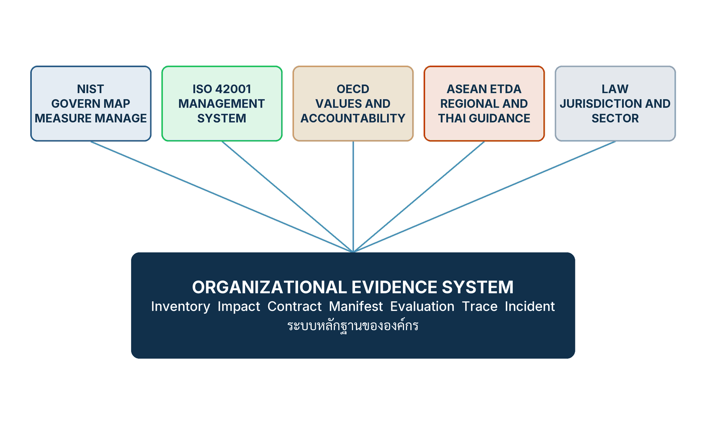

ในบทความนี้
- คณะกรรมการที่ไม่มี Decision Right ยังไม่ใช่ governance — นิยามสี่ข้อที่ใช้ตรวจได้ในบ่ายวันศุกร์
- Obligation Map แปดด้านต่อหนึ่งระบบ กฎหมายคือพื้น และจริยธรรมปิดช่องว่างที่เหลือ
- ห้ากรอบต้นทาง หนึ่งระบบหลักฐาน — Inventory, Impact, Contract, Manifest, Evaluation, Trace, Incident
- ประเทศไทย — PDPA แนวทาง ETDA ยุทธศาสตร์ชาติ UNESCO ASEAN และสถานะกฎหมาย AI เฉพาะ ณ วันตรวจสอบ
- EU AI Act — เส้นเวลาที่ใช้จริง และการเลื่อนกำหนดของระบบ high-risk โดยการแก้ไขปี 2569
- Control ตามสัดส่วน — ห้าอย่างที่งานผลกระทบต่ำยังต้องมี และอีกห้าอย่างที่งานผลกระทบสูงต้องเพิ่ม
- เวิร์กช็อป Impact and obligation mapping — จากนิยาม use case ถึงคำตัดสิน Proceed / Modify / Pause / Prohibit
- ตัวชี้วัดสำคัญสิบตัวพร้อมช่อง Scorecard และรูปแบบความล้มเหลวแปดแบบ
- ก้าวต่อไป — จากแผนที่หน้าที่และหลักฐานชุดเดียว สู่สัญญากับ supplier ต้นทุน และ footprint
In this post
- A committee without Decision Right is not yet governance — the four-question definition you can test on a Friday afternoon
- The obligation map's eight dimensions, one system at a time — law is the floor, ethics closes the gap that remains
- Five source frameworks, one evidence system — Inventory, Impact, Contract, Manifest, Evaluation, Trace, Incident
- Thailand — the PDPA, ETDA guidance, the national strategy, UNESCO, ASEAN, and the status of a dedicated AI law on the date checked
- The EU AI Act — the timeline that actually applies, and the high-risk deadlines deferred by the 2026 amendment
- Proportional control — the five things low-impact work still needs, and the five more that high-impact work adds
- The impact and obligation mapping workshop — from defining the use case to Proceed / Modify / Pause / Prohibit
- Ten metrics that matter, each with its Scorecard column, and eight failure patterns
- The road ahead — from an obligation map and one evidence system to suppliers, cost and footprint
🤔 องค์กรมีคณะกรรมการ AI มีนโยบาย AI มีใบ certificate — แล้วใครสั่งหยุดระบบได้ในบ่ายวันศุกร์?
ตอนที่แล้ว Evidence Before Change เดินวงจรจากเหตุการณ์ผิดปกติกลับมาเป็นระบบที่ดีขึ้น และวงจรนั้นตั้งอยู่บนสมมติฐานเงียบ ๆ สองข้อที่ไม่มีใครพูดถึงตอนวาดผัง ข้อแรกคือมีใครสักคนที่ มีอำนาจจริง ในการกดหยุด ข้อที่สองคือมีแฟ้มหลักฐานที่ มีอยู่ก่อนแล้ว ให้เก็บรักษาไว้ก่อนแก้ระบบ ถ้าสองข้อนี้ไม่จริง วงจรเรียนรู้จากเหตุการณ์ที่สวยงามที่สุดก็เป็นเพียงผังบนกระดาน ตอนนี้คือตอนที่ว่าด้วยสิ่งที่ทำให้สองข้อนั้นเป็นจริง
คำตอบสั้นที่สุดของทั้งบทความอยู่ในนิยามเดียวจากบทที่ 10 ของหนังสือ AI Transformation as an Organizational Core: governance ไม่ใช่เอกสาร ไม่ใช่คณะกรรมการ และไม่ใช่ใบรับรอง แต่คือ ระบบ ที่ตัดสินว่า AI ทำอะไรได้ ใครอนุมัติ ต้องมีหลักฐานอะไร และใครต้องลงมือเมื่อผลถูกคัดค้านหรือสร้างความเสียหาย[1] ส่วนวิธีทำให้ระบบนั้นไม่บวมจนใช้ไม่ได้เมื่อมีกรอบใหม่เข้ามาทุกไตรมาส คือการผูก หน้าที่ที่ระบบต้องทำ (obligation) จากทุกกรอบเข้ากับหลักฐานชุดเดียวเจ็ดชิ้น แล้วใช้ซ้ำอย่างรับผิดชอบ ไม่ใช่สร้างแฟ้มใหม่ทุกครั้งที่มีตัวย่อใหม่
1. คณะกรรมการยังไม่ใช่ governance
ลองวางฉากนี้ไว้ในหัวก่อน บ่ายวันศุกร์ ทีมบริการลูกค้าแจ้งเข้ามาว่าระบบช่วยคัดกรองคำขอเริ่มปฏิเสธคำขอกลุ่มหนึ่งในอัตราที่สูงผิดปกติมาตั้งแต่เช้า ยังไม่มีใครพิสูจน์ได้ว่าผิดจริงหรือเป็นความบังเอิญของข้อมูลสัปดาห์นี้ แต่ก็ยังไม่มีใครพิสูจน์ได้ว่าไม่ผิด คำถามเดียวที่ต้องตอบภายในหนึ่งชั่วโมงคือ หยุดหรือไม่หยุด และคำถามที่ตามมาทันทีคือ ใครเป็นคนตอบ
องค์กรจำนวนมากตอบคำถามนี้ไม่ได้ ทั้งที่มีทุกอย่างที่ดูเหมือนคำตอบครบแล้ว มีคณะกรรมการ AI ที่ประชุมเดือนละครั้งและมีรายงานการประชุมย้อนหลังสิบสองเดือน มีนโยบาย AI ที่ผ่านการทบทวนของฝ่ายกฎหมายและประกาศบนอินทราเน็ต มีใบรับรองมาตรฐานติดอยู่หน้าห้องประชุมใหญ่ แต่พอถึงบ่ายวันศุกร์จริง ๆ สิ่งที่เกิดขึ้นคือการส่งอีเมลหากันสี่รอบเพื่อหาว่า "เรื่องนี้ใครตัดสิน" และเมื่อถึงวันจันทร์ คำถามก็ยังลอยอยู่ ระบบก็ยังทำงานอยู่ และคำขอที่ถูกปฏิเสธในสามวันนั้นก็ออกไปแล้ว
หนังสือเขียนนิยามของ governance ไว้ในย่อหน้าเดียว และผมคิดว่ามันเป็นย่อหน้าที่ควรพิมพ์ติดผนังห้องประชุมมากกว่าใบ certificate
Governance is the system by which an organization decides what AI may do, who authorizes it, what evidence is required, and who acts when results are contested or harmful. A committee without decision rights is not governance. A policy without inventory, controls, and monitoring is not governance either.[1]
คู่มือภาษาไทยของหนังสือเล่มเดียวกันเขียนประโยคนี้ว่า "Governance คือระบบที่กำหนดว่า AI ทำอะไรได้ ใครอนุมัติ ต้องมีหลักฐานใด และใครต้องดำเนินการเมื่อผลถูกคัดค้านหรือสร้างความเสียหาย คณะกรรมการที่ไม่มี Decision Right ยังไม่ใช่ Governance เช่นเดียวกับนโยบายที่ไม่มี Inventory, Control และ Monitoring" — สังเกตว่าคู่มือไม่แปลคำว่า governance และไม่แปล Decision Right, Inventory, Control, Monitoring ด้วย ผมทำตามนั้นทั้งบทความ เพราะสี่คำนี้เป็นชื่อของสิ่งที่ต้องมีอยู่จริงในองค์กร ไม่ใช่แนวคิดที่แปลแล้วยังหมายถึงสิ่งเดิม
นิยามนี้ใช้ตรวจได้จริง เพราะมันเป็นคำถามสี่ข้อ
สิ่งที่ทำให้นิยามนี้มีประโยชน์กว่าคำว่า "ธรรมาภิบาล AI" ทั่วไป คือมันแตกออกเป็นคำถามสี่ข้อที่ตอบด้วยชื่อคนและชื่อเอกสารได้ ไม่ใช่ตอบด้วยคุณค่า
- AI ทำอะไรได้ — ขอบเขตที่ประกาศไว้ของแต่ละระบบคืออะไร และ prohibited use ที่องค์กรห้ามไว้ชัดเจนคืออะไร ถ้าตอบไม่ได้ แปลว่ายังไม่มีเส้นให้ใครข้าม
- ใครอนุมัติ — ชื่อตำแหน่งที่มี Decision Right จริงในการปล่อยและในการหยุด ไม่ใช่ชื่อคณะที่ประชุมเดือนละครั้ง คณะกรรมการให้ความเห็นได้ แต่ความเห็นไม่ใช่การตัดสินใจ
- ต้องมีหลักฐานอะไร — รายการหลักฐานที่ต้องครบก่อนอนุมัติ และรายการที่ต้องยังคงเป็นจริงอยู่หลังอนุมัติ ข้อหลังคือข้อที่องค์กรลืมบ่อยที่สุด
- ใครลงมือเมื่อผลถูกคัดค้าน — เส้นทางที่เดินได้จริงตอนบ่ายวันศุกร์ ตั้งแต่คนที่รับเรื่อง คนที่มีอำนาจหยุด ไปจนถึงการเยียวยาผู้ที่ได้รับผลไปแล้ว
ประโยคปฏิเสธสองประโยคท้ายนิยามคือส่วนที่กัดที่สุด "คณะกรรมการที่ไม่มี Decision Right ยังไม่ใช่ governance" ตัดข้ออ้างที่พบบ่อยที่สุดทิ้งไปทั้งข้อ เพราะองค์กรส่วนใหญ่ตั้งคณะกรรมการเป็นสิ่งแรก และคณะกรรมการส่วนใหญ่ถูกตั้งขึ้นมาเพื่อ ให้คำแนะนำ ซึ่งเป็นสิ่งที่มีประโยชน์ แต่ไม่ใช่สิ่งเดียวกับอำนาจ ส่วน "นโยบายที่ไม่มี Inventory, Control และ Monitoring ก็ยังไม่ใช่ governance" ตัดข้ออ้างที่พบบ่อยเป็นอันดับสอง คือเอกสารนโยบายที่เขียนดีมาก อ่านแล้วเห็นด้วยทุกบรรทัด แต่ไม่มีทางรู้ได้เลยว่าองค์กรทำตามหรือไม่ เพราะไม่มีบัญชีว่ามีระบบอะไรอยู่บ้าง ไม่มีการควบคุมที่ทดสอบได้ และไม่มีการเฝ้าดูหลังปล่อย
กฎหมาย จริยธรรม และ governance เป็นสามชั้นที่ต่างกัน
บทที่ 10 เปิดด้วยประโยคสรุปที่วางความสัมพันธ์ของสามคำนี้ไว้ชัดเจน: "Law defines obligations, ethics addresses the remaining gap, and governance turns both into decisions, evidence and remedy."[1] — กฎหมายกำหนดหน้าที่ จริยธรรมจัดการช่องว่างที่เหลือ และ governance แปลงทั้งสองอย่างให้กลายเป็นการตัดสินใจ หลักฐาน และการเยียวยา
ผมชอบโครงสามชั้นนี้เพราะมันแก้ปัญหาการถกเถียงที่วนซ้ำในองค์กรได้ทันที การถกเถียงที่ว่าคือ ฝ่ายหนึ่งบอกว่า "เรื่องนี้กฎหมายยังไม่ได้ห้าม" อีกฝ่ายบอกว่า "แต่มันไม่ควรทำ" แล้วทั้งสองฝ่ายพูดกันคนละชั้นจนไม่มีใครถูกหรือผิดได้เลย โครงนี้บอกว่าทั้งสองฝ่ายพูดถูกในชั้นของตัวเอง กฎหมายเป็นชั้นล่างสุด จริยธรรมคือชั้นที่ถามต่อว่าแม้ถูกกฎหมายแล้วควรทำหรือไม่ และ governance คือชั้นที่บังคับให้ทั้งสองชั้นบนต้องจบลงที่สิ่งที่จับต้องได้สามอย่าง คือ ใครตัดสิน หลักฐานอะไร และถ้าเสียหายแล้วจะเยียวยาอย่างไร ถ้าการถกเถียงจบลงโดยไม่มีสามอย่างนี้ แปลว่าเราถกกันในชั้นบนสองชั้นแล้วลืมชั้นที่สาม
บทนี้มีหลักปฏิบัติห้าประการ[1] และข้อแรกในห้าข้อคือข้อที่เป็นเงื่อนไขของอีกสี่ข้อที่เหลือ — "มี Inventory สดและเจ้าของชัด Governance เริ่มจากรู้ว่ามีอะไร" ผมย้ำคำว่า สด เพราะบัญชีที่ทำครั้งเดียวตอนตั้งโครงการแล้วไม่มีใครแตะอีกเลย ไม่ได้ต่างจากการไม่มีบัญชี ยกเว้นตรงที่มันทำให้ทุกคนสบายใจผิด ๆ ว่าเรามีอยู่แล้ว
2. Obligation Map — เริ่มจากแปดด้าน ต่อหนึ่งระบบ
ถ้า governance เริ่มจากรู้ว่ามีอะไร ขั้นถัดไปคือรู้ว่าสิ่งที่มีนั้นมีหน้าที่อะไรติดมาด้วย และหนังสือเรียกเครื่องมือนี้ว่า Obligation Map โดยเขียนไว้ตรงไปตรงมามาก
Begin with an obligation map. For every system, identify jurisdictions, sector rules, organizational role, affected people, data categories, decision impact, supplier chain, and deployment context.[1]
คำที่สำคัญที่สุดในประโยคนี้คือ "For every system" — ต่อ ระบบ ไม่ใช่ต่อองค์กร นี่คือจุดที่แผนที่หน้าที่ต่างจากนโยบายระดับองค์กรโดยสิ้นเชิง นโยบายฉบับเดียวใช้กับทั้งองค์กรได้ แต่หน้าที่ตามกฎหมายไม่ทำงานแบบนั้น ผู้ช่วยร่างอีเมลภายในกับระบบคัดกรองผู้สมัครงานอยู่ในองค์กรเดียวกัน ใช้โมเดลตัวเดียวกันได้ แต่มีเขตอำนาจ กลุ่มผู้ได้รับผล ประเภทข้อมูล และผลกระทบของการตัดสินใจคนละชุดกันโดยสิ้นเชิง การเขียนนโยบายเดียวคลุมทั้งสองระบบจึงให้ผลอย่างใดอย่างหนึ่งเสมอ คือหลวมเกินไปสำหรับระบบที่สอง หรือหนักเกินไปจนไม่มีใครทำตามสำหรับระบบแรก
Obligation Map ของแต่ละระบบต้องระบุแปดด้าน[1] และผมขยายความว่าแต่ละด้านเปลี่ยนคำตอบอย่างไรไว้ในตารางนี้
| Dimension | สิ่งที่ต้องเขียนลงไป | เหตุผลที่มันเปลี่ยนคำตอบ |
|---|---|---|
| Jurisdictions | ผู้ใช้และผู้ได้รับผลอยู่ในเขตอำนาจใดบ้าง ข้อมูลถูกประมวลผลและจัดเก็บที่ใด | ชุดกฎหมายที่ใช้บังคับเปลี่ยนตามที่ตั้งของคน ไม่ใช่ตามที่ตั้งของทีมพัฒนา |
| Sector rules | กฎเฉพาะภาคที่องค์กรอยู่ใต้อยู่แล้ว เช่น การเงิน สุขภาพ การศึกษา สาธารณูปโภค | กฎรายภาคมักเข้มกว่ากฎทั่วไป และมักมาพร้อมผู้กำกับที่ถามหาหลักฐานคนละชุด |
| Organizational role | องค์กรเป็นผู้สร้าง ผู้นำไปใช้ ผู้จัดจำหน่าย หรือหลายบทบาทพร้อมกันในระบบเดียว | บทบาทกำหนดว่าใครต้องทำเอกสาร ใครต้องแจ้ง และใครรับผิดเมื่อเกิดเหตุ |
| Affected people | ใครได้รับผลจากผลลัพธ์ รวมถึงคนที่ไม่ใช่ผู้ใช้ระบบ เช่น ผู้สมัครงานหรือผู้ขอสินเชื่อ | สิทธิที่ต้องเคารพเป็นของคนกลุ่มนี้ ไม่ใช่ของผู้ใช้งานหน้าจอ |
| Data categories | ข้อมูลส่วนบุคคล ข้อมูลอ่อนไหว ข้อมูลของลูกค้าองค์กร ข้อมูลที่มีลิขสิทธิ์ ความลับทางการค้า | ประเภทข้อมูลกำหนดฐานการประมวลผลที่ใช้ได้ และกำหนดข้อสัญญาที่ต้องมีกับ supplier |
| Decision impact | ผลลัพธ์ไปเปลี่ยนอะไรในชีวิตคน ตั้งแต่ข้อความร่างที่คนตรวจก่อน ไปจนถึงการปฏิเสธคำขอ | ระดับผลกระทบเป็นตัวกำหนด Risk Tier และปริมาณหลักฐานที่ต้องมี ไม่ใช่ความซับซ้อนของโมเดล |
| Supplier chain | ผู้ให้บริการโมเดล ผู้ให้บริการ cloud ผู้ให้บริการข้อมูล และ subprocessor ที่อยู่ถัดไปอีกชั้น | หลักฐานส่วนใหญ่ของระบบสมัยใหม่ผลิตโดยคนที่เราไม่ได้เป็นเจ้าของ จึงต้องมาทางสัญญา |
| Deployment context | บริบทการใช้งานจริง ใครใช้ ใช้ภายใต้ความกดดันแบบใด และมีทางเลือกสำรองหรือไม่ | ระบบเดียวกันในบริบทต่างกันมีความเสี่ยงต่างกัน คนที่ไม่มีทางเลือกอื่นคือกลุ่มที่เปราะบางที่สุด |
ขอบเขตของเครื่องมือนี้ต้องพูดให้ชัด แผนที่หน้าที่เป็นเครื่องมือกำหนดขอบเขตเพื่อไปคุยกับคนที่รู้จริง ไม่ใช่คำวินิจฉัย หนังสือเขียนไว้เองว่า "Role and system classification require qualified legal analysis"[1] การกรอกตารางข้างบนครบทั้งแปดช่องไม่ได้แปลว่าองค์กรรู้แล้วว่าตนเองเป็นผู้ให้บริการหรือผู้นำไปใช้ในความหมายทางกฎหมาย มันแปลว่าองค์กรพร้อมจะถามคำถามนั้นกับที่ปรึกษากฎหมายโดยไม่ต้องเสียเวลาสองชั่วโมงแรกไปกับการอธิบายว่าระบบทำอะไร
กฎหมายคือพื้น ไม่ใช่เพดาน
ประโยคถัดไปในหนังสือเป็นประโยคที่ผมอยากให้ทุกคนที่กำลังรอ "กฎหมาย AI" อ่านก่อนรอต่อ
Existing privacy, consumer, employment, intellectual-property, cybersecurity, safety, and professional rules continue to apply even where there is no dedicated AI act. Law is the floor. Ethics asks what the organization should do when an action may be legal but conflicts with dignity, fairness, autonomy, cultural context, or purpose.[1]
คู่มือภาษาไทยเขียนว่า "แม้ไม่มี AI Act โดยเฉพาะ กฎหมาย Privacy, Consumer, Employment, IP, Cybersecurity, Safety และ Professional ก็ยังใช้ กฎหมายคือระดับขั้นต่ำ จริยธรรมถามต่อว่าแม้ถูกกฎหมายควรทำหรือไม่ หากกระทบศักดิ์ศรี ความเป็นธรรม อิสระ วัฒนธรรม หรือพันธกิจ"
ผมเจอความเข้าใจผิดข้อนี้บ่อยมากจนคิดว่ามันเป็นความเข้าใจผิดที่แพงที่สุดในหัวข้อนี้ทั้งหัวข้อ รูปแบบของมันคือ "ประเทศไทยยังไม่มีกฎหมาย AI เพราะฉะนั้นเรื่องนี้ยังไม่มีอะไรต้องทำ" ซึ่งผิดในทางตรรกะตั้งแต่ขั้นแรก เพราะระบบ AI ไม่ได้อยู่ในสุญญากาศทางกฎหมาย มันประมวลผลข้อมูลส่วนบุคคล จึงอยู่ใต้กฎหมายคุ้มครองข้อมูลส่วนบุคคล มันสื่อสารกับผู้บริโภค จึงอยู่ใต้กฎหมายผู้บริโภค มันคัดกรองคนเข้าทำงาน จึงอยู่ใต้กฎหมายแรงงาน มันสร้างและใช้เนื้อหา จึงอยู่ใต้กฎหมายทรัพย์สินทางปัญญา มันรันบนโครงสร้างพื้นฐาน จึงอยู่ใต้กฎหมายความมั่นคงปลอดภัยไซเบอร์ และถ้าอยู่ในวิชาชีพที่มีสภาวิชาชีพ ก็อยู่ใต้กฎของวิชาชีพนั้นด้วย การไม่มีกฎหมายเฉพาะไม่ได้ทำให้กฎหมายทั่วไปหายไป มันแค่ทำให้ไม่มีเอกสารฉบับเดียวที่รวมทุกอย่างไว้ให้อ่านง่าย ๆ
อีกด้านหนึ่งของประโยคเดียวกันคือ คำว่า "พื้น" แปลว่ามีที่ว่างอยู่ข้างบน และที่ว่างนั้นคือที่ของจริยธรรม คำถามในชั้นนี้ไม่ใช่ "ทำได้ไหม" แต่คือ "แม้ทำได้ ควรทำหรือไม่" หนังสือระบุห้าเรื่องที่ใช้เป็นเกณฑ์ในการถามคำถามนั้น คือศักดิ์ศรี ความเป็นธรรม อิสระในการเลือก บริบททางวัฒนธรรม และพันธกิจขององค์กรเอง สังเกตว่าเรื่องสุดท้ายไม่ใช่เรื่องนามธรรมเลย องค์กรที่ประกาศพันธกิจว่าทำเพื่อผู้ใช้กลุ่มหนึ่ง แล้วปล่อยระบบที่ทำให้ผู้ใช้กลุ่มนั้นเสียเปรียบอย่างเป็นระบบ ไม่ได้ทำผิดกฎหมายเสมอไป แต่ทำผิดกับตัวเอง และวันหนึ่งจะต้องอธิบายเรื่องนี้กับคนที่เชื่อคำประกาศนั้น
ในทางปฏิบัติ ช่องว่างระหว่างพื้นกับสิ่งที่ควรทำถูกปิดด้วยสามอย่างตามหลักปฏิบัติข้อ 3 ของบทนี้ — "ใช้กฎหมายเป็นพื้นและจริยธรรมปิดช่องว่าง ระบุ Prohibited Use กลุ่มผลกระทบ และ Remedy"[1] สามคำนี้เป็นเอกสารที่เขียนได้จริงในหนึ่งหน้า คือรายการสิ่งที่องค์กรประกาศว่าจะไม่ใช้ AI ทำ รายชื่อกลุ่มคนที่ได้รับผลและสิ่งที่แต่ละกลุ่มมีสิทธิคาดหวัง และเส้นทางเยียวยาเมื่อผิดพลาด ถ้าองค์กรมีสามหน้านี้ครบก่อนปล่อยระบบแรก การถกเถียงเรื่องจริยธรรมทั้งหมดจะสั้นลงอย่างน่าประหลาดใจ
3. ห้ากรอบ หนึ่งระบบหลักฐาน
ถึงจุดนี้ปัญหาที่แท้จริงเริ่มปรากฏ องค์กรที่ทำ Obligation Map ครบทุกระบบจะพบว่าตัวเองอยู่ใต้กรอบอ้างอิงหลายชุดพร้อมกัน ฝ่ายความเสี่ยงถือ NIST AI RMF ฝ่ายคุณภาพกำลังเตรียม ISO/IEC 42001 ฝ่ายกลยุทธ์อ้าง OECD AI Principles ในสไลด์บอร์ด ทีมที่ทำงานกับหน่วยงานรัฐถูกถามถึงแนวทาง ETDA และฝ่ายกฎหมายถือ PDPA กับกฎรายภาคอยู่แล้ว ถ้าแต่ละกรอบผลิตแฟ้มเอกสารของตัวเอง องค์กรจะจบลงด้วยห้าแฟ้มที่พูดถึงระบบเดียวกันด้วยคำคนละชุด อัปเดตไม่พร้อมกัน และไม่มีแฟ้มไหนตรงกับสิ่งที่รันอยู่จริง
ข้อเสนอของบทที่ 10 คือกลับด้านการมองปัญหา แทนที่จะถามว่า "กรอบนี้ต้องการเอกสารอะไร" ให้ถามว่า "ระบบนี้ต้องผลิตหลักฐานอะไรอยู่แล้ว และหลักฐานชิ้นนั้นตอบกรอบไหนได้บ้าง" คำตอบคือรูปที่ 14 — ห้ากล่องต้นทางไหลลงสู่กล่องเดียว
{kind=link}

กล่องสีเข้มด้านล่างคือระบบหลักฐานขององค์กร และมันมีเจ็ดชิ้น[1] คือ Inventory, Impact, Contract, Manifest, Evaluation, Trace และ Incident ส่วนกล่องต้นทางมีห้ากล่อง[1] คือ NIST, ISO/IEC 42001, OECD, ASEAN กับ ETDA รวมกันเป็นกล่องเดียวในฐานะแนวทางระดับภูมิภาคและระดับประเทศ และกล่องสุดท้ายคือกฎหมายตามเขตอำนาจและรายภาค ประโยคที่หนังสือเขียนไว้ใต้รูปคือ "Map obligations to artifacts once, then reuse evidence responsibly" — จับคู่หน้าที่กับหลักฐานครั้งเดียว แล้วใช้ซ้ำอย่างรับผิดชอบ
💡 มุมมองของผม: หลักปฏิบัติข้อ 2 ของบทนี้คือประโยคที่บทความทั้งบทเถียงอยู่ — "ผูก Obligation กับ Evidence ใช้ Artifact ร่วมอย่างรับผิดชอบโดยไม่อ้างว่ากรอบเหมือนกัน"[1] ผมอยากให้อ่านครึ่งหลังให้ดีพอ ๆ กับครึ่งแรก เพราะครึ่งแรกคือสิ่งที่ทำให้งานเป็นไปได้ ส่วนครึ่งหลังคือสิ่งที่ทำให้งานยังซื่อสัตย์อยู่ การใช้หลักฐานชิ้นเดียวตอบสองกรอบเป็นเรื่องดี แต่การพูดว่าเพราะฉะนั้นสองกรอบนี้ก็เหมือนกัน เป็นคนละเรื่องและเป็นเรื่องที่อันตราย — มันคือประโยคที่จะถูกยกมาอ่านให้ฟังในวันที่มีคนถามว่าทำไมองค์กรถึงคิดว่าตัวเองไม่ต้องทำอะไรเพิ่ม
อีกสี่ข้อที่เหลือของบทนี้อ่านคู่กันแล้วเห็นภาพเต็ม ข้อ 1 คือ "มี Inventory สดและเจ้าของชัด" ข้อ 3 คือ "ใช้กฎหมายเป็นพื้นและจริยธรรมปิดช่องว่าง" ข้อ 4 คือ "ทำให้ Supplier Change และ Exit กำกับได้ เพราะ Vendor Dependence อยู่ในขอบเขตความเสี่ยง" ซึ่งเป็นเนื้อหาของตอนหน้าทั้งตอน และข้อ 5 คือ "วัด Sustainability ตลอด Lifecycle และ Rebound ประสิทธิภาพต่อหน่วยอาจดีขึ้นขณะผลรวมสูงขึ้น" ซึ่งเป็นเนื้อหาของตอนหน้าเช่นกัน[1]
กรอบไหนให้อะไร และกินหลักฐานชิ้นไหน
ตารางนี้คือหัวใจของบทความ คอลัมน์กลางใช้ถ้อยคำของหนังสือเอง ไม่ใช่คำพ้องความหมายที่ผมเลือกให้ เพราะกริยาที่แต่ละกรอบใช้บอกสถานะของมัน — "supplies" ไม่เท่ากับ "specifies" และ "emphasize" ไม่เท่ากับทั้งสองอย่าง
| Framework | What it supplies (ถ้อยคำของหนังสือ) | Evidence artifact ที่มันใช้ |
|---|---|---|
| NIST AI RMF[2] | "supplies lifecycle functions" — ให้ฟังก์ชันตลอดวงจรชีวิต คือ Govern, Map, Measure, Manage และ NIST ระบุเองว่ากรอบนี้ "designed for voluntary use" | Inventory และ Impact เป็นหลัก (Map) ต่อด้วย Evaluation และ Trace (Measure) และ Incident (Manage) |
| ISO/IEC 42001:2023[3] | "specifies an AI management system" — กำหนด ระบบการจัดการ AI (AI management system) ระดับองค์กร ไม่ใช่ระดับระบบเดี่ยว | Inventory, Contract และ Incident — สิ่งที่ระบบการจัดการต้องมีกระบวนการรองรับ |
| ISO/IEC 42005:2025[4] | "addresses lifecycle impact assessment" — ว่าด้วย การประเมินผลกระทบ (impact assessment) ตลอดวงจรชีวิตของระบบ | Impact โดยตรง และดึง Inventory กับ Evaluation มาเป็นข้อมูลนำเข้า |
| OECD AI Principles[5] | "emphasize human rights, transparency, robustness, accountability, traceability, and ongoing risk management" — เน้นคุณค่าและ ความรับผิดรับชอบ (accountability) | Trace และ Incident เป็นหลัก เพราะ traceability กับการบริหารความเสี่ยงต่อเนื่องอยู่ในหลักการข้อ 1.5 |
| ASEAN Guide + ฉบับ Generative AI[6][7] | "provide regional guidance" — ให้บริบทระดับภูมิภาค โดยประกาศตัวเองว่าใช้ "on voluntary basis" | Impact และ Manifest — คำถามเชิงบริบทที่ต้องตอบก่อนออกแบบ |
| แนวทาง ETDA (Generative AI Governance)[8] | "emphasizes governance structure, strategy, operations, human oversight, and incident reporting" — ห้าเรื่อง โดย การกำกับดูแลโดยมนุษย์ (human oversight) และการรายงานเหตุการณ์อยู่ในนั้นด้วย | Inventory, Trace และ Incident — โดยเฉพาะ Incident ที่แนวทางนี้เน้นเป็นพิเศษ |
| กฎหมาย (เขตอำนาจและรายภาค) | กำหนดหน้าที่ที่ผูกพัน ไม่ใช่ข้อแนะนำ — รายละเอียดของฝั่งไทยอยู่ใน ส่วนที่ 4 และฝั่งสหภาพยุโรปอยู่ใน ส่วนที่ 5 | ทั้งเจ็ดชิ้น โดยเฉพาะ Contract, Impact และ Trace ที่มักถูกเรียกดูเป็นชิ้นแรก |
หลักฐานเจ็ดชิ้น อ่านทีละชิ้น
เจ็ดชิ้นนี้ไม่ใช่ชื่อโฟลเดอร์ แต่ละชิ้นตอบคำถามคนละคำถาม และคำถามเหล่านี้คือคำถามที่ผู้ตรวจ ผู้กำกับ หรือทนายของอีกฝ่ายจะถามจริง ๆ
- Inventory — มีระบบอะไรอยู่บ้าง ใครเป็นเจ้าของ อยู่ใน Risk Tier ใด และรายการนี้อัปเดตล่าสุดเมื่อไร
- Impact — ระบบนี้กระทบใคร อย่างไร ประเมินไว้ว่าอย่างไร และใครลงชื่อรับผลการประเมิน
- Contract — สิ่งที่ผู้ให้บริการภายนอกรับปากไว้เป็นลายลักษณ์อักษร ตั้งแต่การใช้ข้อมูล การเปลี่ยนโมเดล การแจ้งเหตุ ไปจนถึงทางออกจากสัญญา
- Manifest — บัญชีรายการบริบทขณะทำงาน (runtime-context manifest) คือรายการทุกอย่างที่กำหนดพฤติกรรมของระบบ ณ เวลาที่มันตอบ ทั้งรุ่นของโมเดล prompt แหล่งข้อมูล และเครื่องมือที่เรียกได้
- Evaluation — การประเมินระบบ (evaluation) ที่ทำไว้ก่อนปล่อย บนประชากรใด ที่ Threshold เท่าไร และผลออกมาอย่างไร
- Trace — ร่องรอยที่สร้างเหตุการณ์ย้อนกลับได้ (reconstructable trace) พร้อม ที่มาของข้อมูลและผลลัพธ์ (provenance) มากพอที่จะประกอบเหตุการณ์หนึ่งขึ้นมาใหม่ได้ในภายหลัง
- Incident — เมื่อเกิดเรื่องแล้วเกิดอะไรขึ้น ใครรู้เมื่อไร ทำอะไร เยียวยาอย่างไร และเปลี่ยนอะไรในระบบหลังจากนั้น
ประโยชน์ของการมองแบบนี้เห็นได้ทันทีเมื่อมีกรอบใหม่เข้ามา คำถามเปลี่ยนจาก "ต้องทำโครงการใหม่อีกโครงการหรือไม่" เป็น "กรอบใหม่นี้ขอหลักฐานชิ้นไหนในเจ็ดชิ้นที่เรามีอยู่ และขอในรูปแบบที่ต่างจากเดิมตรงไหน" คำตอบส่วนใหญ่คือขอชิ้นเดิมในรูปแบบที่ต่างเล็กน้อย ซึ่งเป็นงานหนึ่งสัปดาห์ ไม่ใช่งานหนึ่งไตรมาส
ข้อควรระวังที่ต้องพูดให้ดังกว่าประโยชน์
หนังสือเขียนประโยคเปิดของย่อหน้าเรื่องกรอบไว้ว่า "Several frameworks can share evidence without being treated as interchangeable."[1] — หลายกรอบใช้หลักฐานร่วมกันได้ โดยไม่ถูกปฏิบัติราวกับว่ามันแทนกันได้ ประโยคนี้ไม่ใช่คำขยาย มันคือเงื่อนไขของทั้งวิธีการ
เหตุผลอยู่ที่สถานะทางกฎหมายของแต่ละกรอบซึ่งต่างกันจริง ๆ NIST ระบุเองว่ากรอบของตน "designed for voluntary use"[2] ASEAN Guide เขียนไว้ตรง ๆ ว่า "Nothing in this Guide may be interpreted as replacing or changing any party's legal obligations or rights under any member state's laws"[6] — ไม่มีข้อความใดในคู่มือนี้ที่ตีความได้ว่าแทนที่หรือเปลี่ยนแปลงหน้าที่หรือสิทธิตามกฎหมายของประเทศสมาชิก ส่วนแนวทาง ETDA มีขอบเขตที่หนังสือระบุไว้ว่า "institutional guidance does not replace applicable law, contracts, or sector-specific control requirements"[1] และมาตรฐาน ISO ทั้งสองฉบับที่อ้างถึงในบทความนี้ อ้างจากคำอธิบายสาธารณะของมาตรฐาน ไม่ได้ทำซ้ำข้อกำหนดที่มีลิขสิทธิ์ และไม่ได้ให้การรับรองใด ๆ
4. ประเทศไทย — สิ่งที่ผูกพันอยู่แล้ว และสิ่งที่ยังไม่ผูกพัน
คำถามแรกที่ผมได้ยินในห้องประชุมไทยเกือบทุกครั้งคือ "ตกลงประเทศไทยมีกฎหมาย AI แล้วหรือยัง" ผมคิดว่านี่เป็นคำถามที่ถูกต้องแต่ผิดลำดับ เพราะคำตอบของมัน ไม่ว่าจะเป็นมีหรือยังไม่มี ก็ไม่เปลี่ยนสิ่งที่องค์กรต้องทำในสัปดาห์นี้เลย ลำดับที่ถูกกว่าคือถามก่อนว่า อะไรผูกพันเราอยู่แล้ววันนี้ แล้วค่อยถามว่าอะไรกำลังจะเพิ่มเข้ามา ส่วนนี้เรียงตามลำดับนั้น
PDPA คือพื้นที่มีอยู่แล้ว และมันครอบคลุม AI เต็มที่
ตรวจสอบเมื่อ 5 กันยายน 2569: พระราชบัญญัติคุ้มครองข้อมูลส่วนบุคคล พ.ศ. 2562 ประกาศในราชกิจจานุเบกษา เล่ม 136 ตอนที่ 69 ก เมื่อ 27 พฤษภาคม 2562 โดยมาตรา 2 ให้ใช้บังคับตั้งแต่วันถัดจากวันประกาศ ยกเว้นหมวด 2, 3, 5, 6, 7 และมาตรา 95 ถึง 96 ที่ให้ใช้บังคับเมื่อพ้นกำหนดหนึ่งปีนับแต่วันประกาศ[9] และกฎหมายฉบับนี้ใช้บังคับกับการประมวลผลข้อมูลส่วนบุคคลที่ทำโดย AI เต็มที่ ไม่มีข้อยกเว้นสำหรับเทคโนโลยี
มาตรา 3 ของ PDPA เป็นมาตราที่อธิบายคำว่า "กฎหมายคือพื้น" ได้ดีที่สุดโดยไม่ต้องใช้คำอุปมาเลย เพราะมันเขียนไว้ว่า ในกรณีที่มีกฎหมายอื่นบัญญัติเรื่องการคุ้มครองข้อมูลส่วนบุคคลไว้โดยเฉพาะสำหรับกิจการ หน่วยงาน หรือเรื่องใด ให้ใช้กฎหมายนั้น เว้นแต่บทบัญญัติเกี่ยวกับการเก็บรวบรวม ใช้ หรือเปิดเผยข้อมูลส่วนบุคคล สิทธิของเจ้าของข้อมูลส่วนบุคคล และบทกำหนดโทษที่เกี่ยวข้อง ให้ใช้ PDPA เป็นการเพิ่มเติม[9] — กฎรายภาคไม่ได้ยกเว้นกฎทั่วไป มันวางซ้อนกัน
สามเรื่องต่อไปนี้คือเรื่องที่ผมเห็นทีมทำระบบ AI พลาดบ่อยที่สุด และทั้งสามเรื่องเป็นตัวบทที่อ่านได้เอง
เรื่องที่หนึ่ง Consent ไม่ใช่คำตอบของทุกคำถาม มาตรา 19 วางความยินยอมไว้เป็นค่าตั้งต้น คือผู้ควบคุมข้อมูลส่วนบุคคลจะเก็บรวบรวม ใช้ หรือเปิดเผยข้อมูลส่วนบุคคลไม่ได้ หากเจ้าของข้อมูลไม่ได้ให้ความยินยอมไว้ก่อนหรือในขณะนั้น เว้นแต่บทบัญญัติแห่งพระราชบัญญัตินี้หรือกฎหมายอื่นบัญญัติให้กระทำได้ และข้อยกเว้นชุดสำคัญอยู่ในมาตรา 24 ซึ่งระบุฐานอื่นนอกจากความยินยอมไว้หกฐาน[9] ได้แก่ จดหมายเหตุหรือการวิจัยและสถิติเพื่อประโยชน์สาธารณะที่มีมาตรการคุ้มครองที่เหมาะสม การป้องกันหรือระงับอันตรายต่อชีวิต ร่างกาย หรือสุขภาพของบุคคล ความจำเป็นเพื่อปฏิบัติตามสัญญากับเจ้าของข้อมูลหรือดำเนินการตามคำขอก่อนเข้าทำสัญญา ความจำเป็นเพื่อภารกิจเพื่อประโยชน์สาธารณะหรือการใช้อำนาจรัฐที่มอบให้แก่ผู้ควบคุมข้อมูล ประโยชน์โดยชอบด้วยกฎหมายของผู้ควบคุมข้อมูลหรือของบุคคลอื่นเว้นแต่สิทธิขั้นพื้นฐานของเจ้าของข้อมูลจะสำคัญกว่า และการปฏิบัติตามกฎหมายของผู้ควบคุมข้อมูล
เหตุผลที่เรื่องนี้สำคัญกับระบบ AI โดยเฉพาะ คือทีมที่รีบมักเลือกทางที่ดูง่ายที่สุด คือใส่กล่องติ๊กเพิ่มอีกกล่องหนึ่ง แล้วเรียกมันว่าการปฏิบัติตามกฎหมาย หนังสือจัดพฤติกรรมนี้ไว้ในรายการรูปแบบความล้มเหลวด้วยถ้อยคำว่า "using consent as the answer to every privacy question"[1] — ใช้ Consent ตอบทุกเรื่อง Privacy ปัญหาของทางลัดนี้ไม่ใช่แค่ว่ามันอาจเลือกฐานผิด แต่คือมันทำให้องค์กรไม่เคยถามคำถามที่ยากกว่า ซึ่งคือคำถามว่าการประมวลผลนี้ จำเป็น ต่ออะไร เพราะฐานที่เหลืออีกหกฐานล้วนมีคำว่าจำเป็นหรือประโยชน์ที่ต้องพิสูจน์อยู่ในตัว
เรื่องที่สอง สิทธิของเจ้าของข้อมูลต้องยังใช้ได้ แม้การตัดสินใจจะผ่าน AI มาตรา 30 ถึง 34 ให้สิทธิเจ้าของข้อมูลไว้ห้าประการ[9] คือสิทธิเข้าถึงและขอสำเนา สิทธิขอรับหรือโอนข้อมูล สิทธิคัดค้าน สิทธิขอให้ลบ ทำลาย หรือทำให้ไม่สามารถระบุตัวบุคคลได้ และสิทธิขอให้ระงับการใช้ข้อมูล ส่วนมาตรา 35 และ 36 เป็นหน้าที่ของผู้ควบคุมข้อมูล ไม่ใช่สิทธิของเจ้าของข้อมูล จึงไม่ควรนับรวมเป็นเจ็ดสิทธิ
ความเชื่อมโยงที่ผมอยากให้เห็นคือ ห้าสิทธินี้แปลเป็นข้อกำหนดทางวิศวกรรมได้ทันที ถ้าระบบตอบไม่ได้ว่าข้อมูลของบุคคลหนึ่งถูกใช้ที่ไหนบ้าง สิทธิเข้าถึงก็ทำไม่ได้ ถ้าไม่มี Lineage ที่ตามได้ว่าข้อมูลไหลไปที่ใด สิทธิขอให้ลบก็เป็นคำสัญญาที่ทำไม่ได้จริง และถ้าไม่มีเส้นทาง Appeal ที่คนจริงเดินได้ สิทธิคัดค้านก็เป็นเพียงข้อความในนโยบายความเป็นส่วนตัว นี่คือเหตุผลที่หลักฐานชิ้น Trace กับชิ้น Incident ในระบบเจ็ดชิ้นไม่ใช่ของฝ่ายเทคนิคอย่างเดียว มันคือสิ่งที่ทำให้สิทธิตามกฎหมายเป็นจริงได้ในทางปฏิบัติ
เรื่องที่สาม ผู้ควบคุมกับผู้ประมวลผลมีหน้าที่คนละชุด และเส้นนี้คือเส้นที่สัญญากับ vendor วิ่งอยู่ มาตรา 37 กำหนดหน้าที่ผู้ควบคุมข้อมูลส่วนบุคคลไว้สามข้อ[9] คือจัดให้มีมาตรการรักษาความมั่นคงปลอดภัยที่เหมาะสมและทบทวนเมื่อจำเป็นหรือเมื่อเทคโนโลยีเปลี่ยนแปลงไปโดยให้เป็นไปตามมาตรฐานขั้นต่ำที่คณะกรรมการประกาศกำหนด ป้องกันการใช้หรือเปิดเผยโดยปราศจากอำนาจเมื่อให้ข้อมูลแก่บุคคลอื่น และจัดให้มีระบบการลบหรือทำลายข้อมูลเมื่อพ้นกำหนดระยะเวลาเก็บรักษา เมื่อไม่เกี่ยวข้องหรือเกินวัตถุประสงค์ เมื่อมีการร้องขอ หรือเมื่อถอนความยินยอม ส่วนมาตรา 40 กำหนดหน้าที่ผู้ประมวลผลข้อมูลส่วนบุคคลไว้สามข้อ[9] คือดำเนินการตามคำสั่งของผู้ควบคุมข้อมูลเท่านั้น เว้นแต่คำสั่งนั้นขัดต่อกฎหมาย จัดให้มีมาตรการรักษาความมั่นคงปลอดภัยที่เหมาะสมและแจ้งเหตุละเมิดข้อมูลส่วนบุคคลแก่ผู้ควบคุมข้อมูล และจัดทำบันทึกรายการกิจกรรมการประมวลผลตามหลักเกณฑ์ที่คณะกรรมการกำหนด
วรรคสองของมาตรา 40 คือประโยคที่ผมอยากให้ทีมจัดซื้อและทีมกฎหมายอ่านคู่กัน เพราะมันบัญญัติว่าถ้าผู้ประมวลผลข้อมูลทำนอกเหนือคำสั่งของผู้ควบคุมข้อมูล ให้ถือว่าผู้ประมวลผลนั้นเป็นผู้ควบคุมข้อมูลสำหรับการนั้น[9] พูดอีกอย่างคือ กฎหมายไม่ได้ให้บทบาทตามชื่อในสัญญา แต่ให้ตามพฤติกรรมจริง และนี่คือเหตุผลเชิงกฎหมายว่าทำไมหลักฐานชิ้น Contract ถึงต้องระบุให้ชัดว่าผู้ให้บริการทำอะไรได้บ้างกับข้อมูลของเรา ไม่ใช่เพราะเราไม่ไว้ใจเขา แต่เพราะขอบเขตของคำสั่งคือสิ่งที่กำหนดว่าใครเป็นใครในสายตากฎหมาย
สุดท้าย หน้าที่ตาม PDPA ไม่ได้อยู่ในตัวพระราชบัญญัติเพียงอย่างเดียว ตรวจสอบเมื่อ 5 กันยายน 2569: หน้ารวมกฎหมายลำดับรองของสำนักงานคณะกรรมการคุ้มครองข้อมูลส่วนบุคคลยังเผยแพร่ประกาศคณะกรรมการอยู่[10] เช่น หลักเกณฑ์การส่งหรือโอนข้อมูลส่วนบุคคลไปยังต่างประเทศตามมาตรา 28 และมาตรา 29 ลงวันที่ 21 กุมภาพันธ์ 2568 และหลักเกณฑ์การพิจารณาโทษปรับทางปกครองโดยคณะกรรมการผู้เชี่ยวชาญ ซึ่งแก้ไขเมื่อ 8 พฤษภาคม 2567 — รายการนี้เป็นสิ่งที่หน้าเว็บแสดง ณ วันที่สืบค้น ไม่ใช่บัญชีครบถ้วนของกฎหมายลำดับรองทั้งหมด ประเด็นที่ผมอยากให้จำคือ หน้าที่ตาม PDPA ถูกขยายความด้วยประกาศที่มีชีวิต การอ่านตัวบทครั้งเดียวเมื่อสามปีก่อนจึงไม่พอ
แนวทาง ETDA — ไม่ใช่กฎหมาย แต่เป็นโครงที่ใช้ได้จริง
ตรวจสอบเมื่อ 5 กันยายน 2569: แนวทางการประยุกต์ใช้ Generative AI อย่างมีธรรมาภิบาลสำหรับองค์กร ฉบับ Vol. 1 ของ ETDA ประกาศเมื่อ 30 ตุลาคม 2567 ต่อยอดจาก AI Governance Guideline for Executives และยังเปิดให้ดาวน์โหลดฟรีบนเว็บไซต์ ETDA[8] แนวทางนี้เน้นห้าเรื่อง คือโครงสร้างธรรมาภิบาล กลยุทธ์ ปฏิบัติการ human oversight และ incident reporting[1]
ผมแนะนำแนวทางฉบับนี้กับองค์กรไทยบ่อย ด้วยเหตุผลที่ไม่เกี่ยวกับกฎหมายเลย คือมันเขียนด้วยภาษาที่คณะผู้บริหารไทยอ่านแล้วเข้าใจตรงกัน และมันครอบคลุมห้าเรื่องที่พอดีกับสิ่งที่องค์กรขนาดกลางทำได้จริง แต่ต้องอ่านคู่กับขอบเขตที่หนังสือระบุไว้เสมอว่า "institutional guidance does not replace applicable law, contracts, or sector-specific control requirements"[1] การทำตามแนวทาง ETDA ครบทุกข้อไม่ได้แปลว่าปฏิบัติตาม PDPA ครบ และไม่ได้แปลว่าข้อสัญญากับผู้ให้บริการต่างประเทศของเราเพียงพอ
ตรวจสอบเมื่อ 5 กันยายน 2569 เช่นกัน: AI Job Redesign Guideline ของ ETDA ยังเผยแพร่อยู่บนคลังความรู้ ETDA โดยระบุ ลิขสิทธิ์ 2568 และเป็นแนวทางระดับองค์กร ไม่ใช่ข้อบังคับตามกฎหมาย[11] ขอบเขตเนื้อหาของเอกสารฉบับนี้ ผมอ้างตามคำอธิบายในหนังสือ ไม่ได้อ้างจากหน้าเว็บ เพราะหน้าเว็บไม่มีคำอธิบาย หนังสือระบุว่ามันเป็น "a Thai organizational pathway from task analysis through human–AI workflow, levels of authority, competency needs, and job-description redesign" คือเส้นทางระดับองค์กรของไทยตั้งแต่การวิเคราะห์งาน ผ่าน workflow ระหว่างคนกับ AI ระดับของอำนาจ ความสามารถที่ต้องมี ไปจนถึงการออกแบบคำบรรยายลักษณะงานใหม่ พร้อมขอบเขตว่า "organizations still need employee consultation, labor-law review, and local measurement of job quality and outcomes"[1] — องค์กรยังต้องหารือกับพนักงาน ตรวจกฎหมายแรงงาน และวัดคุณภาพงานกับผลลัพธ์ในบริบทของตัวเองอยู่ดี
กฎหมาย AI เฉพาะของไทย — สถานะ ณ วันที่ตรวจสอบ
ผมเขียนประโยคนี้พร้อมวันที่กำกับโดยตั้งใจ และอยากอธิบายว่าทำไม เพราะในหัวข้อนี้ ประโยคที่ไม่มีวันที่กำกับคือประโยคที่ผิดได้เงียบ ๆ ข้อความว่า "ไทยยังไม่มีกฎหมาย AI" ที่เขียนไว้ในสไลด์เมื่อปีที่แล้วและยังถูกใช้ต่ออยู่ในสไลด์ปีนี้ อาจกลายเป็นข้อความเท็จไปแล้วโดยไม่มีใครในองค์กรรู้ วิธีเดียวที่ป้องกันได้คือเขียนวันที่ไว้ทุกครั้ง แล้วให้วันที่นั้นเป็นตัวบอกว่าเมื่อไรควรตรวจซ้ำ ผมใช้กฎง่าย ๆ ว่าประโยคสถานะกฎหมายทุกประโยคมีอายุหนึ่งไตรมาส และต้องตรวจใหม่ก่อนการตัดสินใจปล่อยระบบทุกครั้ง ไม่ว่าจะเพิ่งตรวจไปเมื่อไรก็ตาม
ยุทธศาสตร์ชาติ การประเมินของ UNESCO และแนวทางระดับภูมิภาค
สามอย่างนี้ถูกอ้างถึงบ่อยในสไลด์ผู้บริหาร และทั้งสามอย่างมีสถานะเดียวกัน คือบอกทิศทางหรือบอกสภาพ ไม่ได้สร้างหรือยกเว้นหน้าที่ใด
ตรวจสอบเมื่อ 5 กันยายน 2569: แผนปฏิบัติการด้านปัญญาประดิษฐ์แห่งชาติ พ.ศ. 2565 ถึง 2570 ได้รับความเห็นชอบจากคณะรัฐมนตรีเมื่อ 26 กรกฎาคม 2565 มีห้ายุทธศาสตร์และ 15 แผนงาน[13] ห้ายุทธศาสตร์ตามถ้อยคำของแหล่งคือการเตรียมความพร้อมด้านสังคม จริยธรรม กฎหมายและกฎระเบียบสำหรับการประยุกต์ใช้ AI การพัฒนาโครงสร้างพื้นฐานเพื่อการพัฒนา AI อย่างยั่งยืน การเพิ่มขีดความสามารถของคนและการศึกษาด้าน AI การขับเคลื่อนการพัฒนาเทคโนโลยีและนวัตกรรม AI และการส่งเสริมการใช้ AI ทั้งภาครัฐและเอกชน ขอบเขตที่หนังสือระบุไว้กับเอกสารฉบับนี้ตรงไปตรงมามาก คือยุทธศาสตร์ชาติแสดงทิศทาง ไม่ได้สร้างการอนุญาตให้กับกิจกรรมการประมวลผลหรือการปล่อยระบบใดโดยเฉพาะ[1]
ตรวจสอบเมื่อ 5 กันยายน 2569: รายงาน Thailand Artificial Intelligence Readiness Assessment ของ UNESCO เผยแพร่เมื่อ 7 กรกฎาคม 2568 ประเมินห้ามิติจากการหารือกับสถาบันกว่า 30 แห่ง และระบุช่องว่างด้านความสอดคล้องเชิงนโยบาย การประสานงานระหว่างสถาบัน และการพัฒนาขีดความสามารถ[14] รายงานฉบับนี้มีประโยชน์มากในการอธิบายกับคณะผู้บริหารว่าทำไมคำตอบของภาครัฐจึงยังไม่ครบทุกคำถาม แต่ต้องอ่านพร้อมขอบเขตที่หนังสือระบุไว้ว่า การประเมินคือการสังเคราะห์เชิงสถาบันที่ผูกกับช่วงเวลาหนึ่ง ไม่ใช่คำวินิจฉัยเรื่องการปฏิบัติตามกฎหมายขององค์กรรายแห่ง[1] — ช่องว่างของประเทศไม่ใช่คะแนนขององค์กรคุณ และคะแนนขององค์กรคุณก็ไม่ได้ดีขึ้นเพราะประเทศดีขึ้น
ตรวจสอบเมื่อ 5 กันยายน 2569: ASEAN Guide on AI Governance and Ethics ฉบับ ลิขสิทธิ์ 2567 และ Expanded ASEAN Guide ฉบับ Generative AI เดือนมกราคม 2568 ยังเผยแพร่อยู่บนเว็บไซต์ ASEAN ทั้งสองฉบับเป็นแนวทางสมัครใจระดับภูมิภาคและไม่ผูกพันทางกฎหมาย[6][7] ฉบับหลังระบุความสัมพันธ์ของตัวเองไว้ชัดว่า "This document supplements and supports the ASEAN Guide on AI Governance and Ethics (2024)" คือเสริมและสนับสนุนฉบับปี 2567 ไม่ได้แทนที่
5. EU AI Act — ทำไมองค์กรไทยถึงต้องอ่าน
คำถามที่ตามมาเสมอคือ ในเมื่อเราเป็นองค์กรไทย ทำไมต้องสนใจกฎหมายของสหภาพยุโรป คำตอบสั้น ๆ คือ เพราะกฎหมายชุดนี้ผูกกับ ที่ตั้งของคนที่ได้รับผล ไม่ใช่ที่ตั้งของบริษัท องค์กรไทยที่มีผู้ใช้ในยุโรป มีลูกค้าองค์กรที่ขายต่อไปยุโรป หรือรับจ้างพัฒนาให้ลูกค้ายุโรป จึงอยู่ในบทสนทนานี้ด้วย ไม่ว่าจะตั้งใจหรือไม่ และคำตอบที่ยาวกว่านั้นคือ แม้องค์กรจะไม่มีผู้ใช้ในยุโรปเลย โครงของกฎหมายฉบับนี้ก็กลายเป็นภาษากลางที่ลูกค้าองค์กรและผู้ตรวจสอบทั่วโลกใช้ถามคำถามไปแล้ว
ตรวจสอบเมื่อ 5 กันยายน 2569: EU AI Act มีผลบังคับตั้งแต่ 1 สิงหาคม 2567 และใช้บังคับทั่วไปตั้งแต่ 2 สิงหาคม 2569 โดยข้อห้ามและหน้าที่ด้าน AI literacy ใช้ตั้งแต่ 2 กุมภาพันธ์ 2568 และกฎด้าน governance กับหน้าที่ของโมเดล general-purpose AI ใช้ตั้งแต่ 2 สิงหาคม 2568[15][16] ส่วนกำหนดเวลาของระบบ high-risk ถูกเลื่อนโดย Regulation (EU) 2026/1744 ซึ่งลงวันที่ 8 กรกฎาคม 2569 ประกาศในราชกิจจานุเบกษาของสหภาพยุโรปเมื่อ 24 กรกฎาคม และมีผลเมื่อ 27 กรกฎาคม 2569 ไปเป็น 2 ธันวาคม 2570 สำหรับระบบตาม Annex III และ 2 สิงหาคม 2571 สำหรับระบบตาม Annex I[17]
| Date | สิ่งที่เริ่มใช้บังคับ | สิ่งที่องค์กรควรมีอยู่แล้วก่อนถึงวันนั้น |
|---|---|---|
| 1 สิงหาคม 2567 | Regulation (EU) 2024/1689 มีผลบังคับ (entered into force) และเริ่มทยอยใช้ | Inventory ที่บอกได้ว่าองค์กรมีระบบใดที่แตะผู้ใช้ในยุโรปบ้าง |
| 2 กุมภาพันธ์ 2568 | ข้อห้าม (prohibited AI practices) และหน้าที่ด้าน AI literacy | รายการ prohibited use ขององค์กรเอง และหลักฐานว่าคนที่ใช้ระบบได้รับการอบรม |
| 2 สิงหาคม 2568 | กฎด้าน governance และหน้าที่ของโมเดล general-purpose AI | Contract กับผู้ให้บริการโมเดลที่ระบุเอกสารทางเทคนิคที่เราจะได้รับ |
| 2 สิงหาคม 2569 | การใช้บังคับทั่วไป รวมถึงอำนาจบังคับใช้และหน้าที่ด้านความโปร่งใส | Manifest และ Trace ที่บอกได้ว่าระบบทำงานด้วยอะไรและตอบอะไรไปแล้วบ้าง |
| 2 ธันวาคม 2570 | หน้าที่ของระบบ high-risk ตาม Annex III ตามที่เลื่อนโดย Regulation (EU) 2026/1744 | Impact ที่ทำเสร็จแล้ว พร้อมเส้นทาง Appeal และการยอมรับ Residual Risk ที่มีคนลงชื่อ |
| 2 สิงหาคม 2571 | หน้าที่ของระบบ high-risk ที่ฝังอยู่ในผลิตภัณฑ์ตาม Annex I ตามที่เลื่อนโดยฉบับแก้ไขเดียวกัน | Evaluation และ Incident ที่ผูกกับรอบการรับรองของผลิตภัณฑ์ที่ระบบนั้นฝังอยู่ |
คอลัมน์ขวาของตารางนี้เป็นข้อสังเกตของผม ไม่ใช่ข้อกำหนดของกฎหมาย และผมใส่ไว้เพราะมันคือประเด็นที่ผมอยากให้เห็นมากที่สุดในส่วนนี้ทั้งส่วน — สิ่งที่แต่ละกำหนดเวลาต้องการ คือหลักฐานชิ้นที่เราคุยกันไปแล้วใน ส่วนที่ 3 ทั้งนั้น องค์กรที่มีระบบหลักฐานเจ็ดชิ้นอยู่แล้วจะเจอว่างานที่เหลือคือการจัดรูปแบบและเติมช่องว่าง ส่วนองค์กรที่ไม่มี จะเจอว่าต้องเริ่มจากศูนย์ภายใต้กำหนดเวลาที่คนอื่นกำหนดให้
ข้อสังเกตสุดท้ายของส่วนนี้เป็นเรื่องวิธีอ่านข่าวมากกว่าเรื่องกฎหมาย การเลื่อนกำหนดเวลาของระบบ high-risk ในปี 2569 ถูกรายงานในหลายที่ด้วยพาดหัวทำนองว่ากฎเกณฑ์ผ่อนคลายลง ผมอยากให้ระวังการอ่านแบบนั้น เพราะการเลื่อนกำหนดของหมวดหนึ่ง ไม่ได้เลื่อนกำหนดของหมวดอื่น อำนาจบังคับใช้และหน้าที่ด้านความโปร่งใสที่เริ่มเมื่อ 2 สิงหาคม 2569 ยังเป็นวันที่ผ่านไปแล้ว และข้อห้ามที่เริ่มตั้งแต่ 2 กุมภาพันธ์ 2568 ก็ผ่านไปนานแล้วเช่นกัน สิ่งที่การเลื่อนให้มาคือเวลาเตรียมหลักฐานสำหรับหมวดที่หนักที่สุด ซึ่งเป็นของขวัญที่มีประโยชน์เฉพาะกับองค์กรที่เริ่มเตรียมแล้วเท่านั้น
6. Control ตามสัดส่วน — เบาลงได้ แต่ไม่เคยว่างเปล่า
ถ้าอ่านมาถึงตรงนี้แล้วรู้สึกว่างานเยอะเกินกว่าจะทำได้ ผมคิดว่าความรู้สึกนั้นถูกต้อง และหนังสือก็ตอบไว้ในย่อหน้าเดียวกัน ทางออกไม่ใช่การลดมาตรฐานลงทั้งกระดาน แต่คือการยอมรับว่าไม่ใช่ทุกระบบต้องผ่านด่านเดียวกัน
Apply proportional control. Low-impact drafting does not require the same gate as employment, credit, health, education, or safety decisions, but still needs inventory, data rules, supplier control, security, and user guidance. High-impact systems require impact assessment, independent challenge, meaningful human authority, appeal and remedy, and explicit residual-risk acceptance.[1]
คู่มือภาษาไทยเขียนว่า "ใช้ Control ตามสัดส่วน เครื่องมือร่างทั่วไปไม่ควรผ่าน Gate เท่าระบบจ้างงาน สินเชื่อ สุขภาพ การศึกษา หรือความปลอดภัย แต่ยังต้องอยู่ใน Inventory มีกติกาข้อมูล Supplier Control, Security และคำแนะนำ ระบบผลกระทบสูงต้องมี Impact Assessment, Independent Challenge, Human Authority, Appeal, Remedy และการยอมรับ Residual Risk"
คำที่ต้องเน้นคือ "but still needs" ระดับผลกระทบต่ำต้องการห้าอย่าง และระดับสูงต้องการเพิ่มอีกห้าอย่าง[1] ระดับต่ำจึงเบากว่า แต่ไม่เคยว่างเปล่า ตารางที่แสดงคอลัมน์ระดับต่ำเป็นช่องว่างทั้งคอลัมน์ คือตารางที่อ่านหนังสือผิด
| Control | Low-impact เช่น เครื่องมือร่างข้อความทั่วไป | High-impact เช่น จ้างงาน สินเชื่อ สุขภาพ การศึกษา ความปลอดภัย | Evidence artifact |
|---|---|---|---|
| Inventory | ต้องมี — อยู่ในบัญชี มีเจ้าของ และมี Risk Tier ที่ระบุไว้ | ต้องมี พร้อมรอบทบทวนที่ถี่ขึ้นและการเชื่อมกับทะเบียนความเสี่ยงขององค์กร | Inventory |
| กติกาข้อมูล (data rules) | ต้องมี — ข้อมูลอะไรใส่เข้าไปได้ อะไรใส่ไม่ได้ เขียนเป็นข้อความที่ผู้ใช้อ่านเข้าใจ | ต้องมี พร้อม Legal Basis ที่ระบุรายฟิลด์ และ Lineage ที่ตามได้ตลอดเส้นทาง | Manifest, Contract |
| Supplier control | ต้องมี — รู้ว่าใช้ผู้ให้บริการรายใด ข้อมูลไปอยู่ที่ไหน และมีข้อสัญญาพื้นฐานรองรับ | ต้องมี พร้อมหลักฐานจากผู้ให้บริการ การแจ้งเปลี่ยนโมเดล และแผนทางออกจากสัญญา | Contract |
| Security | ต้องมี — ตามมาตรฐานความมั่นคงปลอดภัยที่องค์กรใช้อยู่แล้วกับระบบอื่น | ต้องมี พร้อมการทดสอบเฉพาะทางและการทบทวนเมื่อเทคโนโลยีเปลี่ยนแปลงไป | Evaluation, Trace |
| คำแนะนำผู้ใช้ (user guidance) | ต้องมี — บอกให้ชัดว่าเครื่องมือนี้ทำอะไรไม่ได้ และผลลัพธ์ต้องผ่านตาคนก่อน | ต้องมี พร้อมการแจ้งผู้ได้รับผลว่ามี AI เกี่ยวข้องอยู่ในกระบวนการ | Manifest |
| Impact assessment | ไม่ต้องผ่าน gate เดียวกัน — บันทึกเหตุผลของการจัดชั้นไว้ก็เพียงพอ | ต้องมี ทำก่อนปล่อย และทบทวนเมื่อบริบทหรือประชากรผู้ใช้เปลี่ยน | Impact |
| Independent challenge | ไม่บังคับ — การทบทวนโดยเพื่อนร่วมทีมเพียงพอในระดับนี้ | ต้องมี — คนหรือทีมที่ไม่ได้ขึ้นตรงกับเจ้าของระบบ มีอำนาจตั้งคำถาม และคำตอบถูกบันทึกไว้ | Impact, Evaluation |
| อำนาจตัดสินใจของมนุษย์ที่มีความหมาย | โดยธรรมชาติของงานร่าง คนเป็นผู้ปล่อยผลลัพธ์อยู่แล้ว | ต้องมี อำนาจตัดสินใจ (decision authority) ที่เปลี่ยนผลได้จริง มีเวลาพอ และมีข้อมูลพอ ไม่ใช่ปุ่มยืนยัน | Trace |
| Appeal และ Remedy | ช่องทางร้องเรียนปกติขององค์กรเพียงพอ | ต้องมีเส้นทางเฉพาะที่ผู้ได้รับผลรู้ว่ามีอยู่ ใช้ได้จริง มีกำหนดเวลา และมีการเยียวยาที่ระบุไว้ | Incident |
| การยอมรับ Residual Risk อย่างชัดแจ้ง | ไม่บังคับ — ความเสี่ยงที่เหลืออยู่ในระดับที่นโยบายทั่วไปรับไว้แล้ว | ต้องมี — เขียนความเสี่ยงที่เหลือเป็นข้อความ แล้วให้คนที่มีอำนาจลงชื่อยอมรับพร้อมวันที่ | Impact, Incident |
สองแถวสุดท้ายเป็นแถวที่องค์กรข้ามบ่อยที่สุด และเป็นสองแถวที่ผมคิดว่าแยกองค์กรที่ทำ governance จริง ออกจากองค์กรที่ทำเอกสาร Appeal คือสิ่งที่ทำให้คำว่า "ผู้ได้รับผล" ในแผนที่หน้าที่มีความหมายขึ้นมา เพราะถ้าคนที่ถูกปฏิเสธไม่มีทางบอกใครได้เลยว่าคำตอบนี้ผิด องค์กรก็จะไม่มีวันรู้ว่าระบบผิด ส่วนการยอมรับ Residual Risk อย่างชัดแจ้ง คือสิ่งที่เปลี่ยนความเสี่ยงจากสิ่งที่ลอยอยู่ในอากาศ ให้กลายเป็นสิ่งที่มีเจ้าของและมีวันที่ ผมเคยเห็นเอกสารประเมินความเสี่ยงที่เขียนดีมากจบลงด้วยคำว่า "ยอมรับได้" โดยไม่มีชื่อใครอยู่ข้างล่าง ซึ่งแปลว่าไม่มีใครยอมรับอะไรเลย
เกณฑ์ที่ใช้จัดชั้นก็ต้องพูดให้ชัดเช่นกัน สิ่งที่กำหนดชั้นคือผลกระทบของการตัดสินใจที่มีต่อคน ไม่ใช่ความซับซ้อนของโมเดลหรือขนาดงบประมาณของโครงการ ระบบที่ใช้โมเดลเล็กมากแต่ตัดสินว่าใครได้เข้าสัมภาษณ์งาน อยู่ในชั้นสูงกว่าระบบที่ใช้โมเดลใหญ่ที่สุดในองค์กรเพื่อสรุปรายงานการประชุมภายใน การสลับสองอย่างนี้คือความผิดพลาดที่ทำให้ทรัพยากรด้าน governance ไปกองอยู่ผิดที่มาแล้วในหลายองค์กร และมันเกิดขึ้นง่ายมากเวลาที่คนตัดสินใจจัดชั้นเป็นคนกลุ่มเดียวกับคนที่ภูมิใจกับความซับซ้อนทางเทคนิคของระบบ
7. เวิร์กช็อป Impact and obligation mapping
ทุกอย่างที่ผ่านมาสรุปลงเป็นการประชุมหนึ่งครั้ง ต่อหนึ่ง use case และหนังสือให้ลำดับของการประชุมนั้นไว้เป็นย่อหน้าเดียว
Define the use case, decision, role, and jurisdictions. Map affected groups, rights, benefits, and credible harms. Identify privacy, employment, sector, AI, IP, security, and transparency obligations. Set risk tier, human authority, notice, appeal, and monitoring. Review vendor evidence and exit. Estimate energy and model-sizing options. Decide proceed, modify, pause, or prohibit and name evidence gaps.[1]
ผมแตกย่อหน้านี้ออกเป็นตารางที่กรอกได้จริงในห้องประชุม โดยเพิ่มเพียงสองคอลัมน์ที่หนังสือไม่ได้เขียนไว้ คือหลักฐานที่แต่ละขั้นผลิตออกมา และเจ้าของของขั้นนั้น เพราะการประชุมที่จบลงโดยไม่มีสองสิ่งนี้ คือการประชุมที่ต้องนัดประชุมใหม่
| Step | คำถามที่ต้องตอบให้จบในห้อง | Evidence artifact ที่ได้ | เจ้าของ |
|---|---|---|---|
| 1 · Define | use case นี้คืออะไร ตัดสินใจอะไร องค์กรอยู่ในบทบาทใด และเกี่ยวข้องกับเขตอำนาจใดบ้าง | Inventory | เจ้าของสายงานที่ใช้ระบบ |
| 2 · Affected groups | ใครได้รับผล มีสิทธิอะไร ได้ประโยชน์อะไร และมี harm ที่น่าเชื่อได้อะไรบ้าง | Impact | เจ้าของสายงาน ร่วมกับตัวแทนผู้ใช้ |
| 3 · Obligations | หน้าที่ด้าน privacy, employment, sector, AI, IP, security และ transparency ข้อใดใช้บังคับบ้าง | Impact, Contract | ฝ่ายกฎหมาย ร่วมกับที่ปรึกษาภายนอกเมื่อจำเป็น |
| 4 · Tier และการควบคุม | Risk Tier เท่าไร ใครมี human authority การแจ้งทำอย่างไร Appeal เดินทางไหน และ Monitoring วัดอะไร | Impact, Trace | เจ้าของระบบ ร่วมกับฝ่ายความเสี่ยง |
| 5 · Vendor และ Exit | ผู้ให้บริการให้หลักฐานอะไร แจ้งการเปลี่ยนแปลงอย่างไร และถ้าต้องออกจากสัญญาจะออกอย่างไร | Contract | ฝ่ายจัดซื้อ ร่วมกับสถาปนิกระบบ |
| 6 · Energy และ model sizing | ทางเลือกด้านขนาดโมเดลมีอะไรบ้าง และแต่ละทางเลือกใช้พลังงานต่างกันอย่างไร | Manifest | ทีมแพลตฟอร์ม |
| 7 · Decide | Proceed, Modify, Pause หรือ Prohibit — เลือกหนึ่งคำ แล้วบันทึกเหตุผลไว้พร้อมวันที่ | Impact | ผู้มี Decision Right ตามที่ประกาศไว้ |
| 8 · Evidence gaps | อะไรที่เรายังตอบไม่ได้ในวันนี้ ใครจะไปหาคำตอบ และภายในเมื่อไร | Inventory, Evaluation | ผู้มี Decision Right |
ขั้นที่ 6 ในตารางนี้ตั้งใจไม่มีตัวเลขใด ๆ เพราะการประเมินพลังงานและการเลือกขนาดโมเดลเป็นเรื่องของ AI ที่ยั่งยืน (sustainable AI) ซึ่งมีทั้งตัวเลขและกับดักของตัวเองรออยู่ในตอนหน้า สิ่งที่ต้องทำในเวิร์กช็อปนี้คือทำให้คำถามติดอยู่ในวาระ ไม่ใช่ตอบมันให้จบในห้องนี้
สองขั้นสุดท้ายคือขั้นที่ผมอยากให้ปกป้องเวลาไว้ให้ดีที่สุด เพราะมันมักถูกบีบให้เหลือห้านาทีสุดท้ายของการประชุมเสมอ ขั้นที่ 7 บังคับให้เลือกหนึ่งในสี่คำ และคุณค่าของมันอยู่ที่การมีคำว่า Pause และ Prohibit วางอยู่บนโต๊ะจริง ๆ องค์กรที่มีเพียง Proceed กับ Modify ให้เลือก ไม่ได้กำลังตัดสินใจ แต่กำลังเจรจาเงื่อนไขของสิ่งที่ตัดสินใจไปแล้ว ส่วนขั้นที่ 8 ทำสิ่งที่ตรงข้ามกับสัญชาตญาณของทุกคนในห้อง คือมันขอให้เขียนสิ่งที่เรายังไม่รู้ลงไปเป็นลายลักษณ์อักษร ซึ่งรู้สึกเหมือนการประกาศความอ่อนแอ แต่จริง ๆ แล้วเป็นสิ่งที่ทำให้การอนุมัติมีความหมาย เพราะการอนุมัติที่ระบุช่องว่างไว้ชัด คือการอนุมัติที่รู้ว่าตัวเองกำลังอนุมัติอะไร ส่วนการอนุมัติที่ไม่มีช่องว่างเลยสักข้อ มักแปลว่ายังไม่มีใครมองหา
ข้อควรระวังสุดท้ายของส่วนนี้คือ อย่าเปลี่ยนเวิร์กช็อปนี้ให้กลายเป็นแบบฟอร์มที่ทีมกรอกส่งขึ้นไปแล้วรออนุมัติกลับลงมา ลำดับข้างต้นทำงานได้เพราะทุกคนอยู่ในห้องเดียวกันและได้ยินคำตอบของกันและกัน — ฝ่ายกฎหมายได้ยินว่าระบบทำอะไรจริง ทีมพัฒนาได้ยินว่าใครเป็นผู้ได้รับผล และผู้มี Decision Right ได้ยินทั้งสองฝั่งก่อนลงชื่อ พอมันกลายเป็นแบบฟอร์ม สิ่งที่เหลืออยู่คือกระดาษ ซึ่งเป็นสิ่งที่นิยามใน ส่วนที่ 1 บอกไว้แล้วว่ายังไม่ใช่ governance
8. ตัวชี้วัดสำคัญ และรูปแบบความล้มเหลว
หนังสือให้รายการตัวชี้วัดของบทนี้ไว้ยาว และสิบตัวแรกเป็นของตอนนี้[1] ส่วนอีกสามตัวสุดท้าย คือ smallest-adequate-model routing พลังงานและ emission ต่อผลลัพธ์ที่สำเร็จ และ total footprint หลังการใช้งานเติบโต เป็นของตอนหน้าทั้งชุด ผมแยกตามนั้นโดยตั้งใจ ไม่ใช่เพราะลืม
กติกาที่ใช้กับทุกแถวมาจากภาคผนวกของหนังสือ คือตัวชี้วัดเชิงปฏิบัติการทุกตัวต้องมีสามอย่างครบ ได้แก่ Threshold ที่ใช้ตัดสิน เจ้าของที่มีชื่อ และการกระทำเชิงเรียนรู้ที่จะเกิดขึ้นเมื่อค่าทะลุ Threshold[1] ตัวชี้วัดที่ขาดข้อใดข้อหนึ่งในสามข้อนี้คือกราฟบน dashboard ไม่ใช่ตัวชี้วัด
คอลัมน์ Scorecard ในตารางข้างล่างบอกว่าตัวชี้วัดแต่ละตัวไปขยับช่องใดบนกระดานคะแนนหกช่องขององค์กร — การจับคู่นี้เป็นการตัดสินเชิงบรรณาธิการของผมเอง หนังสือพิมพ์รายการนี้ไว้เป็นรายการเดียวโดยไม่ได้แบ่งช่อง
| Metric | สิ่งที่นับจริง | การกระทำเมื่อค่าทะลุ Threshold | Scorecard |
|---|---|---|---|
| Inventory coverage | สัดส่วนระบบ AI ที่ทำงานอยู่จริงและปรากฏในบัญชีพร้อมชื่อเจ้าของ | หยุดอนุมัติระบบใหม่จนกว่าบัญชีจะตามทัน — ระบบที่ไม่อยู่ในบัญชีคือระบบที่กำกับไม่ได้ | Risk |
| Classification freshness | อายุของการจัดชั้นความเสี่ยงล่าสุดของแต่ละระบบ เทียบกับการเปลี่ยนแปลงล่าสุดของระบบนั้น | บังคับทบทวนการจัดชั้นเมื่อ Manifest เปลี่ยน ไม่ใช่รอรอบปฏิทินประจำปี | Learning |
| Impact-assessment completion | สัดส่วนระบบชั้นสูงที่มี Impact ซึ่งทำเสร็จ ลงชื่อแล้ว และยังไม่หมดอายุ | ระงับการปล่อยรุ่นถัดไปของระบบที่ค้าง และรายงานต่อผู้มี Decision Right | Risk |
| Legal Basis และ Lineage | สัดส่วนชุดข้อมูลที่ระบุ Legal Basis ได้ และตาม Lineage ย้อนกลับไปถึงต้นทางได้ | ตัดชุดข้อมูลที่ระบุฐานไม่ได้ออกจากระบบ แล้วบันทึกผลกระทบต่อคุณภาพที่ตามมา | Quality |
| Control tests | จำนวนและผลของการทดสอบว่าการควบคุมที่ประกาศไว้ยังทำงานจริง ไม่ใช่ยังมีอยู่ในเอกสาร | การควบคุมที่สอบตกถือว่าไม่มีอยู่ ต้องแจ้งเจ้าของระบบและทบทวน Risk Tier ทันที | Quality |
| Appeal volume และ resolution | จำนวนการคัดค้านที่เข้ามา เวลาที่ใช้จนได้ข้อยุติ และสัดส่วนที่ผลถูกกลับ | สัดส่วนผลถูกกลับที่สูงคือสัญญาณของระบบ ไม่ใช่ของผู้ร้อง — ต้องกลับไปดู Evaluation | People |
| Complaints | ข้อร้องเรียนจากผู้ได้รับผลและจากผู้ใช้ภายใน แยกตามระบบและตามกลุ่ม | ข้อร้องเรียนที่กระจุกอยู่ในกลุ่มเดียวคือคำถามเรื่องความเป็นธรรม ต้องเข้าวาระทบทวน | Value |
| Audit issues | ประเด็นจากการตรวจสอบภายในและภายนอก แยกตามความรุนแรงและอายุที่ค้างอยู่ | ประเด็นที่ค้างเกินกำหนดต้องเลื่อนขึ้นไปหาผู้มีอำนาจ พร้อมวันที่และชื่อผู้รับผิดชอบ | Risk |
| Vendor evidence | สัดส่วนผู้ให้บริการที่ส่งหลักฐานตามที่สัญญากำหนด ครบถ้วนและตรงเวลา | หลักฐานที่ขาดคือความเสี่ยงที่องค์กรรับไว้เอง ต้องบันทึกเป็น Residual Risk ที่มีชื่อเจ้าของ | Risk |
| Incident rate | จำนวนเหตุการณ์ต่อรอบเวลา แยกตามความรุนแรง และเวลาตั้งแต่ตรวจพบจนเยียวยาเสร็จ | ทุกเหตุการณ์ต้องจบด้วยการเปลี่ยนแปลงที่ระบุได้ในระบบหรือในกติกา ไม่ใช่จบด้วยรายงาน | Learning |
ผมอยากให้สังเกตว่าช่อง Economics ไม่ปรากฏเลยในตารางนี้ ซึ่งไม่ใช่ความบังเอิญ เพราะตัวชี้วัดที่ขยับช่องนั้นคือสามตัวที่หนังสือวางไว้ท้ายรายการและอยู่ในตอนหน้า การที่ตอนนี้ขยับช่อง Risk เป็นหลัก แล้วขยับ Quality, People และ Learning เป็นรอง ก็บอกอะไรบางอย่างเกี่ยวกับธรรมชาติของงาน governance เอง — มันเป็นงานที่วัดผลได้ชัดที่สุดในรูปของเรื่องที่ ไม่ เกิดขึ้น ซึ่งเป็นเหตุผลที่มันถูกตัดงบเป็นอันดับแรกเสมอ และเป็นเหตุผลที่ตัวชี้วัดสิบตัวนี้ต้องอยู่บนกระดานเดียวกับตัวเลขรายได้ ไม่ใช่อยู่ในภาคผนวกของรายงานอีกฉบับที่ไม่มีใครเปิด
รูปแบบความล้มเหลว
รายการนี้มีแปดข้อ[1] และผมเรียงตามลำดับของหนังสือ ส่วนข้อที่หนังสือระบุไว้อีกข้อหนึ่ง คือการคิดว่า vendor รับความเสี่ยงแทนเรา เป็นข้อเปิดของตอนหน้าทั้งตอน จึงยกไปไว้ที่นั่น
- ทำ governance หลังสร้างเสร็จ — เริ่มคุยเรื่องหน้าที่และหลักฐานตอนระบบใกล้ปล่อย ซึ่งเป็นจุดที่ทางเลือกเหลือน้อยที่สุดและต้นทุนของการเปลี่ยนสูงที่สุด
- คัดลอกหลักการมาโดยไม่มี Decision Rule — มีคุณค่าเจ็ดข้อติดอยู่บนผนัง แต่ไม่มีประโยคใดที่บอกว่าใครอนุมัติอะไร ที่หลักฐานระดับไหน
- ใช้ Consent ตอบทุกคำถามด้าน Privacy — เพิ่มกล่องติ๊กแทนการถามว่าการประมวลผลนี้จำเป็นต่ออะไร ทั้งที่ตัวบทมีฐานอื่นอีกหกฐานให้พิจารณา
- เฝ้าดูพนักงานโดยไม่โปร่งใส — วัดพฤติกรรมการทำงานผ่านเครื่องมือ AI โดยที่คนถูกวัดไม่รู้ว่าถูกวัดอะไร และผลไปปรากฏที่ใด
- Human oversight เชิงพิธีกรรม — มีคนกดยืนยัน แต่ไม่มีเวลา ไม่มีข้อมูล และไม่มีอำนาจจริงที่จะกดปฏิเสธ ซึ่งคือการโอนความรับผิดไปให้คนที่เปลี่ยนผลไม่ได้
- ไม่มี Appeal — ไม่มีเส้นทางให้ผู้ได้รับผลบอกว่าคำตอบนี้ผิด แปลว่าองค์กรตัดช่องทางเรียนรู้ที่ถูกที่สุดของตัวเองทิ้งไปเอง
- ใช้ Control ระดับเดียวกับทุกงาน — ไม่ว่าจะเข้มเกินไปจนไม่มีใครทำตาม หรือหลวมเกินไปจนไม่ได้ป้องกันอะไร ผลลัพธ์เหมือนกันคือ Control ที่ไม่ได้ทำงาน
- อ้างแนวทางหรือใบรับรองว่าเท่ากับการปฏิบัติตามกฎหมาย — ข้อนี้อันตรายที่สุดเพราะมันฟังดูเหมือนความรับผิดชอบ และเพราะมันมักถูกพูดโดยคนที่ตั้งใจดี
ผมอยากปิดส่วนนี้ด้วยข้อสังเกตเกี่ยวกับรายการทั้งหมด รูปแบบความล้มเหลวทั้งแปดข้อนี้ไม่มีข้อไหนเลยที่เกิดจากความไม่รู้ ทุกข้อเกิดจากการเลือกทางที่ประหยัดกว่าในระยะสั้นภายใต้ข้อจำกัดจริง คือเวลาน้อย คนน้อย และแรงกดดันให้ปล่อยระบบให้ทัน ซึ่งแปลว่าการแก้ไม่ได้อยู่ที่การอบรมเพิ่ม แต่อยู่ที่การทำให้ทางที่ถูกต้องเป็นทางที่ถูกกว่าด้วย และนั่นคือสิ่งที่ระบบหลักฐานชุดเดียวพยายามทำอยู่ตลอดทั้งบทความนี้
9. ก้าวต่อไป
ถ้าจะสรุปทั้งบทเป็นการเปลี่ยนคำถามเดียว ผมจะเลือกการเปลี่ยนคำถามในวาระประชุมจาก "เราต้องทำอะไรเพิ่มเพื่อให้ตรงกับกรอบใหม่นี้" เป็น "กรอบใหม่นี้ขอหลักฐานชิ้นไหนในเจ็ดชิ้นที่เรามีอยู่แล้ว และขอในรูปแบบที่ต่างจากเดิมตรงไหน" คำถามแรกผลิตโครงการ คำถามที่สองผลิตงานที่เสร็จได้
สามอย่างที่ทำได้จริงในสัปดาห์หน้า หนึ่ง เปิดสเปรดชีตหนึ่งใบแล้วเขียนรายชื่อระบบ AI ที่ทำงานอยู่จริงในองค์กรพร้อมชื่อเจ้าของ ยังไม่ต้องจัดชั้น ยังไม่ต้องประเมินอะไรทั้งสิ้น แค่รายชื่อ — ความยากของงานนี้จะบอกคุณเองว่าองค์กรอยู่ตรงไหน สอง เลือกระบบที่มีผลกระทบสูงที่สุดมาหนึ่งระบบ แล้วเดินตารางแปดด้านใน ส่วนที่ 2 ให้ครบทุกช่อง ช่องที่กรอกไม่ได้คือผลลัพธ์ที่มีค่าที่สุดของแบบฝึกหัดนี้ และสาม จัดเวิร์กช็อปตาม ส่วนที่ 7 หนึ่งครั้งกับระบบนั้น โดยมีฝ่ายกฎหมาย เจ้าของสายงาน และคนที่มี Decision Right อยู่ในห้องพร้อมกัน แล้วบังคับให้จบด้วยหนึ่งในสี่คำ
สิ่งที่บทความนี้ยังไม่ได้ตอบ และเป็นสิ่งที่จะทำให้แผนที่หน้าที่ทั้งหมดข้างต้นใช้ไม่ได้ถ้าไม่ตอบ คือหลักฐานส่วนใหญ่ในระบบเจ็ดชิ้นไม่ได้ผลิตโดยองค์กรเอง มันมาจากผู้ให้บริการโมเดล ผู้ให้บริการ cloud และ subprocessor ที่อยู่ถัดไปอีกชั้นหนึ่ง ซึ่งแปลว่าคุณภาพของ governance ทั้งระบบถูกกำหนดโดยข้อความในสัญญาที่ฝ่ายจัดซื้อเจรจาไว้เมื่อสิบแปดเดือนก่อน และทุกคำตอบของ AI ก็มีต้นทุนพลังงานที่ยังไม่มีใครในองค์กรวัดด้วยตัวหารที่ถูกต้อง
🎯 สิ่งสำคัญที่ต้องจำ
- Governance = ระบบที่ตัดสินว่า AI ทำอะไรได้ ใครอนุมัติ ต้องมีหลักฐานอะไร และใครลงมือเมื่อผลถูกคัดค้าน — คณะกรรมการที่ไม่มี Decision Right และนโยบายที่ไม่มี Inventory, Control, Monitoring ยังไม่ใช่
- Obligation map = แปดด้านต่อหนึ่งระบบ คือเขตอำนาจ กฎรายภาค บทบาทองค์กร ผู้ได้รับผล ประเภทข้อมูล ผลกระทบของการตัดสินใจ ห่วงโซ่ supplier และบริบทการใช้งาน
- Law is the floor = PDPA และกฎหมายที่มีอยู่ใช้บังคับเต็มที่แม้ยังไม่มีกฎหมาย AI เฉพาะ ส่วนจริยธรรมคือชั้นที่ถามต่อว่าแม้ทำได้ควรทำหรือไม่
- One evidence system = หลักฐานชุดเดียวเจ็ดชิ้น คือ Inventory, Impact, Contract, Manifest, Evaluation, Trace และ Incident ที่ทุกกรอบมาขอใช้ร่วมกัน
- Frameworks share evidence, not identity = NIST, ISO 42001, ISO 42005, OECD, ASEAN และ ETDA ใช้หลักฐานร่วมกันได้ แต่ไม่ใช่สิ่งเดียวกัน และไม่มีฉบับใดเป็นหลักฐานว่าองค์กรทำตามกฎหมายครบ
- Proportional control = งานร่างทั่วไปไม่ต้องผ่าน gate เดียวกับสินเชื่อหรือการจ้างงาน แต่ยังต้องอยู่ใน Inventory มีกติกาข้อมูล Supplier Control, Security และคำแนะนำผู้ใช้เสมอ
- Thai AI law = ยังอยู่ระหว่างการพัฒนา ณ 5 กันยายน 2569 — เขียนวันที่กำกับไว้ทุกครั้ง และตรวจสถานะกับที่ปรึกษากฎหมายไทยก่อนตัดสินใจปล่อยระบบทุกครั้ง
อ้างอิง
ตรวจสอบทุกแหล่งเมื่อ 5 กันยายน 2026 (เวลาประเทศไทย) · ป้ายหลักฐานสี่แบบ: Law ตัวบทกฎหมายหรือประกาศทางการ · Standard มาตรฐานหรือกรอบทางการที่เผยแพร่แล้ว · Study งานวิจัยหรือสัญญาณภาคสนาม · Synthesis การสังเคราะห์ของผู้เขียนหรือแหล่งที่ไม่ใช่งานวิจัย
- Synthesis Anirach Mingkhwan. AI Transformation as an Organizational Core — Bilingual Companion Playbook — บทที่ 10 รูปที่ 14 และภาคผนวก D. ต้นฉบับของผู้เขียน ไม่ได้เผยแพร่ออนไลน์จึงไม่มีลิงก์ · evidence snapshot 5 กันยายน 2026 — เข้าถึง 2026-09-05. รองรับ: นิยาม governance และประโยคปฏิเสธสองประโยคท้ายนิยาม, Obligation Map แปดด้าน, ประโยค Law is the floor, ย่อหน้าเรื่องกรอบและวลี without being treated as interchangeable, หลักฐานเจ็ดชิ้นและห้ากล่องต้นทางในรูปที่ 14, หลักปฏิบัติห้าประการ, Control ตามสัดส่วนห้าบวกห้า, ลำดับขั้นของเวิร์กช็อป, รายการตัวชี้วัดและรูปแบบความล้มเหลว, ขอบเขตของแหล่งอ้างอิงทุกรายการ และข้อความปฏิเสธความรับผิดในภาคผนวก D
- Standard National Institute of Standards and Technology. AI Risk Management Framework (AI RMF 1.0) — เผยแพร่ 26 มกราคม 2023 หน้าเว็บทางการปรับปรุงล่าสุด 7 เมษายน 2026. nist.gov — เข้าถึง 2026-09-05. รองรับ: สี่ฟังก์ชัน Govern, Map, Measure, Manage และถ้อยคำของ NIST เองว่ากรอบนี้ designed for voluntary use
- Standard ISO / IEC (JTC 1/SC 42). ISO/IEC 42001:2023 — Information technology, Artificial intelligence, Management system — เผยแพร่ 18 ธันวาคม 2023 ฉบับที่ 1 สถานะ Published (ระเบียนจาก IEC Webstore ซึ่งเป็นแคตาล็อกของผู้ร่วมจัดพิมพ์ เนื่องจาก iso.org ปิดกั้นการเรียกดูอัตโนมัติ). webstore.iec.ch — เข้าถึง 2026-09-05. รองรับ: การมีอยู่และสถานะเผยแพร่แล้วของมาตรฐานระบบการจัดการ AI และขอบเขตที่ระบุว่าใช้กับองค์กรทุกขนาดและทุกประเภทที่ให้บริการหรือใช้ผลิตภัณฑ์ซึ่งมีระบบ AI
- Standard ISO / IEC (JTC 1/SC 42). ISO/IEC 42005:2025 — Information technology, Artificial intelligence (AI), AI system impact assessment — เผยแพร่ 28 พฤษภาคม 2025 ฉบับที่ 1 สถานะ Published. webstore.iec.ch — เข้าถึง 2026-09-05. รองรับ: การมีอยู่ของมาตรฐานว่าด้วยการประเมินผลกระทบของระบบ AI ต่อบุคคลและสังคม ครอบคลุมช่วงเวลาและวิธีประเมินตลอดวงจรชีวิต — บทความนี้อ้างเพียงคำอธิบายสาธารณะ ไม่ได้ทำซ้ำข้อกำหนดและไม่ได้ให้การรับรองใด
- Standard OECD. OECD AI Principles (Recommendation of the Council on Artificial Intelligence, OECD/LEGAL/0449) — รับรอง 22 พฤษภาคม 2019 แก้ไข 8 พฤศจิกายน 2023 และแก้ไขระดับรัฐมนตรี 3 พฤษภาคม 2024. oecd.ai — เข้าถึง 2026-09-05. รองรับ: หลักการเชิงคุณค่าห้าข้อ โดย traceability และการบริหารความเสี่ยงต่อเนื่องอยู่ภายใต้หลักการข้อ 1.5 Accountability ไม่ใช่หลักการแยกต่างหาก
- Standard ASEAN. ASEAN Guide on AI Governance and Ethics — ลิขสิทธิ์ 2024 เผยแพร่กุมภาพันธ์ 2024. asean.org — เข้าถึง 2026-09-05. รองรับ: สถานะสมัครใจของคู่มือ ถ้อยคำ on voluntary basis และประโยคที่ระบุว่าไม่มีข้อความใดในคู่มือที่ตีความได้ว่าแทนที่หรือเปลี่ยนแปลงหน้าที่หรือสิทธิตามกฎหมายของประเทศสมาชิก
- Standard ASEAN. Expanded ASEAN Guide on AI Governance and Ethics — Generative AI — มกราคม 2025. asean.org — เข้าถึง 2026-09-05. รองรับ: สถานะของฉบับขยายที่ระบุว่าเสริมและสนับสนุน ASEAN Guide ฉบับปี 2024 และยังเป็นแนวทางสมัครใจระดับภูมิภาค
- Standard ETDA / AI Governance Center. แนวทางการประยุกต์ใช้ Generative AI อย่างมีธรรมาภิบาลสำหรับองค์กร (Generative AI Governance Guideline for Organizations) Vol. 1 — ประกาศ 30 ตุลาคม 2024 เปิดให้ดาวน์โหลดฟรี. etda.or.th พร้อมข่าวประชาสัมพันธ์การประกาศใช้ etda.or.th — เข้าถึง 2026-09-05. รองรับ: การมีอยู่และสถานะเผยแพร่ของแนวทาง และห้าเรื่องที่แนวทางเน้น คือโครงสร้างธรรมาภิบาล กลยุทธ์ ปฏิบัติการ human oversight และ incident reporting · วันประกาศ 30 ตุลาคม 2024 มาจากหน้าข่าวประชาสัมพันธ์ของ ETDA เอง ส่วนหน้า Useful-Resource เป็นแหล่งดาวน์โหลดของตัวแนวทาง · หน้าและข่าวไม่ระบุเลขปรับปรุง หากมีเล่มถัดไปต้องตรวจสถานะใหม่
- Law ราชกิจจานุเบกษา. พระราชบัญญัติคุ้มครองข้อมูลส่วนบุคคล พ.ศ. 2562 — เล่ม 136 ตอนที่ 69 ก ลงวันที่ 27 พฤษภาคม 2019. ratchakitcha.soc.go.th — เข้าถึง 2026-09-05. รองรับ: มาตรา 2 การใช้บังคับ, มาตรา 3 ความสัมพันธ์กับกฎหมายเฉพาะ, มาตรา 19 ความยินยอมเป็นค่าตั้งต้น, มาตรา 24 ฐานอื่นหกฐาน, มาตรา 30 ถึง 34 สิทธิห้าประการของเจ้าของข้อมูล, มาตรา 37 หน้าที่ผู้ควบคุมข้อมูลสามข้อ และมาตรา 40 หน้าที่ผู้ประมวลผลสามข้อพร้อมผลของการทำนอกคำสั่ง — บทความนี้ไม่ได้ให้การตีความกฎหมาย ตัวบททางการและที่ปรึกษากฎหมายไทยเป็นผู้ชี้ขาด
- Law สำนักงานคณะกรรมการคุ้มครองข้อมูลส่วนบุคคล (PDPC). กฎหมายลำดับรองภายใต้ PDPA — หน้ารวมประกาศ — หน้ารวม โดยรายการที่สืบค้นได้ลงวันที่ถึง 21 กุมภาพันธ์ 2025. pdpc.or.th — เข้าถึง 2026-09-05. รองรับ: หน้าที่ตาม PDPA ถูกขยายความด้วยประกาศคณะกรรมการที่ยังมีการออกอยู่ เช่น หลักเกณฑ์การส่งหรือโอนข้อมูลไปต่างประเทศตามมาตรา 28 และ 29 และหลักเกณฑ์การพิจารณาโทษปรับทางปกครอง — รายการที่อ้างเป็นสิ่งที่หน้าเว็บแสดง ณ วันสืบค้น ไม่ใช่บัญชีครบถ้วน
- Standard ETDA. AI Job Redesign Guideline — คลังความรู้ ETDA ระบุปีลิขสิทธิ์ 2025 (หน้าเว็บไม่มีคำอธิบายเนื้อหา คำอธิบายขอบเขตในบทความนี้จึงอ้างจากรายการอ้างอิงของหนังสือ). erc.etda.or.th — เข้าถึง 2026-09-05. รองรับ: การมีอยู่และสถานะเผยแพร่ของแนวทาง และสถานะที่เป็นแนวทางระดับองค์กร ไม่ใช่ข้อบังคับตามกฎหมาย
- Law ETDA. หน้านโยบายการพัฒนากฎหมาย AI — (ร่าง) หลักการของกฎหมายว่าด้วยปัญญาประดิษฐ์ — หน้าลงวันที่ 11 มิถุนายน 2025. etda.or.th — เข้าถึง 2026-09-05. รองรับ: สถานะของกฎหมาย AI เฉพาะของไทย ณ วันสืบค้น คือยังอยู่ระหว่างการพัฒนา โดยหน้าทางการล่าสุดเป็นการเปิดรับฟังความเห็นต่อร่างหลักการ และดัชนีข่าวกฎหมายดิจิทัลของ ETDA เองไม่มีรายการที่ใหม่กว่านี้
- Standard AI Thailand (NECTEC / NSTDA). แผนปฏิบัติการด้านปัญญาประดิษฐ์แห่งชาติเพื่อการพัฒนาประเทศไทย พ.ศ. 2565–2570 — คณะรัฐมนตรีเห็นชอบ 26 กรกฎาคม 2022. ai.in.th — เข้าถึง 2026-09-05. รองรับ: ช่วงเวลาของแผน ห้ายุทธศาสตร์และ 15 แผนงาน และสถานะที่เป็นทิศทางระดับชาติ ไม่ใช่การอนุญาตให้กับกิจกรรมการประมวลผลหรือการปล่อยระบบใด
- Standard UNESCO. Thailand: Artificial Intelligence Readiness Assessment Report — เผยแพร่ 7 กรกฎาคม 2025. unesco.org — เข้าถึง 2026-09-05. รองรับ: การประเมินห้ามิติจากการหารือกับสถาบันกว่า 30 แห่ง และช่องว่างด้านความสอดคล้องเชิงนโยบาย การประสานงานระหว่างสถาบัน และการพัฒนาขีดความสามารถ — เป็นการสังเคราะห์เชิงสถาบันที่ผูกกับช่วงเวลา ไม่ใช่คำวินิจฉัยขององค์กรรายแห่ง
- Law European Commission (DG CONNECT). AI Act — European approach to artificial intelligence (implementation timeline) — หน้าปรับปรุงล่าสุด 3 สิงหาคม 2026. digital-strategy.ec.europa.eu — เข้าถึง 2026-09-05. รองรับ: การมีผลบังคับ 1 สิงหาคม 2024 การใช้บังคับทั่วไป 2 สิงหาคม 2026 ข้อห้ามและ AI literacy ตั้งแต่ 2 กุมภาพันธ์ 2025 กฎ governance และ GPAI ตั้งแต่ 2 สิงหาคม 2025 และกำหนดของระบบ high-risk วันที่ 2 ธันวาคม 2027 กับ 2 สิงหาคม 2028
- Law European Union. Regulation (EU) 2024/1689 (Artificial Intelligence Act) — รับรอง 13 มิถุนายน 2024 ประกาศใน OJ 12 กรกฎาคม 2024. eur-lex.europa.eu — เข้าถึง 2026-09-05. รองรับ: ตัวบทที่ผูกพัน และโครงการจำแนกตามระดับความเสี่ยงที่บทความนี้อ้างถึงโดยไม่จำแนกระบบใดให้
- Law European Union. Regulation (EU) 2026/1744 of 8 July 2026 amending Regulation (EU) 2024/1689 (Digital Omnibus on AI) — ประกาศใน OJ 24 กรกฎาคม 2026 มีผล 27 กรกฎาคม 2026; ตัวบทฉบับรวมแก้ไข ณ 27 กรกฎาคม 2026. eur-lex.europa.eu — เข้าถึง 2026-09-05. รองรับ: ตัวตนและวันที่ของการเปลี่ยนแปลงปี 2026 ที่หนังสือกล่าวถึงแต่ไม่ได้ระบุเลข และการเลื่อนกำหนดของระบบ high-risk เป็น 2 ธันวาคม 2027 สำหรับระบบตาม Annex III และ 2 สิงหาคม 2028 สำหรับระบบตาม Annex I
🤔 Your organization has an AI committee, an AI policy and a certificate on the wall — so who can order a system stopped on a Friday afternoon?
The previous post, Evidence Before Change, walked the loop that turns an abnormal event back into a better system, and that loop rests on two quiet assumptions nobody mentions while the diagram is being drawn. The first is that somebody actually holds the authority to press stop. The second is that a file of evidence already exists to be preserved before the system is touched. If neither is true, even the most elegant incident-learning loop is a picture on a whiteboard. This post is about what makes those two assumptions true.
The shortest answer the whole post has to offer sits in a single definition from Chapter 10 of AI Transformation as an Organizational Core: governance is not a document, not a committee and not a certificate, but the system that decides what AI may do, who authorizes it, what evidence is required, and who acts when results are contested or harmful.[1] And the way to keep that system from bloating past usability as a new framework arrives every quarter is to tie the obligations from every framework to a single set of seven evidence artifacts, and then reuse that evidence responsibly — rather than opening a new file cabinet each time a new acronym appears.
1. A Committee Is Not Yet Governance
Hold this scene in your head first. It is Friday afternoon, and the customer-service team reports that the system screening incoming applications has been rejecting one group of applicants at an unusually high rate since the morning. Nobody can prove yet that it is genuinely wrong, or merely an accident of this week's data — and nobody can prove that it is not. The only question that has to be answered within the hour is stop or don't stop. The question that follows it immediately is: who answers?
A great many organizations cannot answer that, even though they hold everything that looks like an answer. There is an AI committee that meets monthly with twelve months of minutes behind it. There is an AI policy that legal reviewed and that sits published on the intranet. There is a certificate framed outside the main meeting room. And yet when Friday afternoon actually arrives, what happens is four rounds of email trying to establish whose call this is — and by Monday the question is still in the air, the system is still running, and the applications rejected across those three days have already gone out.
The book puts its definition of governance in a single paragraph, and I think it is a paragraph worth printing on the meeting-room wall in place of the certificate.
Governance is the system by which an organization decides what AI may do, who authorizes it, what evidence is required, and who acts when results are contested or harmful. A committee without decision rights is not governance. A policy without inventory, controls, and monitoring is not governance either.[1]
The book's Thai companion renders that same sentence with four of its words deliberately left in English — Decision Right, Inventory, Control and Monitoring — and it does not translate governance either. I follow that convention for the whole post, in both tracks, for the reason the companion does: these four are the names of things that either exist in an organization or do not, not concepts that survive being softened into a warmer word.
The definition is testable, because it is really four questions
What makes this definition more useful than the general phrase "AI governance" is that it breaks into four questions that are answered with the name of a person and the name of a document, rather than with a value.
- What AI may do — what is each system's declared scope, and what are the prohibited uses the organization has ruled out explicitly? If you cannot say, there is no line for anyone to cross.
- Who authorizes it — the job title that holds a real Decision Right over release and over stopping, not the name of a body that meets monthly. A committee can give an opinion; an opinion is not a decision.
- What evidence is required — the list of evidence that must be complete before approval, and the list that must remain true after it. The second list is the one organizations forget most often.
- Who acts when results are contested — the path that can actually be walked on a Friday afternoon, from the person who takes the report, to the person with authority to stop, to the remedy for those already affected.
The two negative sentences that close the definition are the part that bites hardest. "A committee without decision rights is not governance" removes the most common alibi wholesale, because most organizations stand up a committee first, and most committees are constituted to advise — which is useful, and is not the same thing as authority. "A policy without inventory, controls, and monitoring is not governance either" removes the second most common alibi: the beautifully written policy document you agree with line by line, and about which there is no way whatsoever to know whether the organization complies, because there is no register of what systems exist, no control anyone can test, and no watching after release.
Law, ethics and governance are three different layers
Chapter 10 opens with a summary sentence that places the three words in relation to one another without ambiguity: "Law defines obligations, ethics addresses the remaining gap, and governance turns both into decisions, evidence and remedy."[1] Obligations come from the law; the gap that is left over is the business of ethics; and what governance owes is the conversion of both into three things you can hold in your hand — a decision, a piece of evidence, and a remedy.
I like this three-layer structure because it settles, on the spot, an argument that runs in circles inside organizations. The argument goes: one side says "the law does not forbid this", the other says "but we should not do it", and the two of them are speaking on different layers, so neither can ever be right or wrong. The structure says both are right on their own layer. Law is the bottom layer. Ethics is the layer that asks whether a thing that is legal should nonetheless be done. And governance is the layer that forces the two above it to end in three tangible things: who decides, on what evidence, and how anyone harmed is made whole. If a debate ends without those three, it means we argued on the top two layers and forgot the third.
The chapter carries five operating principles,[1] and the first of the five is the condition on which the other four depend — "Maintain a live inventory and named owner: governance begins with knowing what exists." I lean on the word live, because a register compiled once at project kickoff and never touched again differs from having no register at all in exactly one respect: it leaves everyone comfortably wrong about already having one.
2. The Obligation Map — Start with Eight Dimensions, per System
If governance begins with knowing what exists, the next step is knowing what obligations came attached to it, and the book names that tool the obligation map in a sentence that wastes nothing.
Begin with an obligation map. For every system, identify jurisdictions, sector rules, organizational role, affected people, data categories, decision impact, supplier chain, and deployment context.[1]
The most important words in that sentence are "For every system" — per system, not per organization. This is where an obligation map parts company entirely with an organization-level policy. One policy document can cover a whole organization; legal obligations do not work that way. An assistant that drafts internal email and a system that screens job applicants can live in the same organization and even call the same model, yet they sit under completely different jurisdictions, affected groups, data categories and decision impacts. Writing one policy over both therefore always produces one of two results: too loose for the second system, or so heavy for the first that nobody complies.
Each system's obligation map has to name eight dimensions,[1] and the table below is my own expansion of how each one changes the answer.
| Dimension | What to write down | Why it changes the answer |
|---|---|---|
| Jurisdictions | Which jurisdictions the users and the affected people are in, and where the data is processed and stored | The body of law that applies follows where the people are, not where the development team sits |
| Sector rules | The sector-specific rules the organization already lives under — finance, health, education, utilities | Sector rules are usually stricter than general ones, and usually come with a regulator who asks for a different evidence set |
| Organizational role | Whether the organization builds, deploys, distributes — or holds several roles at once in a single system | Role determines who must produce documentation, who must notify, and who is answerable when something goes wrong |
| Affected people | Who is affected by the output, including people who never touch the system — applicants, borrowers | The rights that must be respected belong to these people, not to the person in front of the screen |
| Data categories | Personal data, sensitive data, corporate customer data, copyrighted material, trade secrets | The category dictates which lawful basis is available, and which clauses the supplier contract must carry |
| Decision impact | What the output changes in a person's life, from a draft a human reviews to the refusal of an application | Impact sets the Risk Tier and the volume of evidence required — not the sophistication of the model |
| Supplier chain | Model providers, cloud providers, data providers, and the subprocessors one layer further down | Most of a modern system's evidence is produced by people we do not own, so it has to arrive through contract |
| Deployment context | The real conditions of use — who uses it, under what pressure, and whether an alternative exists | The same system carries different risk in different contexts, and people with no alternative are the most exposed group |
The limits of the tool need saying plainly. An obligation map is a scoping instrument for the conversation with people who actually know; it is not a determination. The book says so itself: "Role and system classification require qualified legal analysis."[1] Filling in all eight cells above does not mean the organization now knows whether it is a provider or a deployer in the legal sense. It means the organization is ready to put that question to counsel without spending the first two hours explaining what the system does.
Law is the floor, not the ceiling
The next sentence in the book is the one I want everybody who is currently waiting for "the AI law" to read before they wait any longer.
Existing privacy, consumer, employment, intellectual-property, cybersecurity, safety, and professional rules continue to apply even where there is no dedicated AI act. Law is the floor. Ethics asks what the organization should do when an action may be legal but conflicts with dignity, fairness, autonomy, cultural context, or purpose.[1]
The book's Thai companion renders the same passage with the seven bodies of law kept in English — Privacy, Consumer, Employment, IP, Cybersecurity, Safety and Professional — and translates "law is the floor" as the minimum level, with ethics asking whether a legal action should still be taken when it touches dignity, fairness, autonomy, culture or mission.
I meet this misunderstanding so often that I think it is the most expensive misunderstanding in the whole subject. Its shape is: "Thailand has no AI law yet, therefore there is nothing to do here." That fails at the first logical step, because an AI system does not sit in a legal vacuum. It processes personal data, so it sits under data-protection law. It communicates with consumers, so it sits under consumer law. It screens people for employment, so it sits under labour law. It creates and consumes content, so it sits under intellectual-property law. It runs on infrastructure, so it sits under cybersecurity law. And if it operates inside a licensed profession, it sits under that profession's rules too. The absence of a dedicated statute does not make the general law disappear. It only means there is no single convenient document that gathers all of it in one readable place.
The other half of that same sentence is that the word "floor" implies space above it, and the space above is where ethics lives. The question on that layer is not "may we?" but "even if we may, should we?" The book names five criteria for asking it: dignity, fairness, autonomy, cultural context, and the organization's own purpose. Notice that the last one is not abstract at all. An organization that declares a mission on behalf of one group of users, then ships a system that systematically disadvantages that same group, has not necessarily broken any law — but it has broken faith with itself, and one day it will have to explain that to the people who believed the declaration.
In practice the gap between the floor and what ought to be done is closed by three things, following the chapter's third operating principle — "Use law as the floor and ethics for the gap: define prohibited uses, affected groups and remedy."[1] All three are documents you can genuinely write on one page each: the list of things the organization declares it will not use AI to do, the list of affected groups and what each group is entitled to expect, and the route to remedy when something goes wrong. Organizations that have those three pages in hand before the first release find that the entire ethics debate gets surprisingly short.
3. Five Frameworks, One Evidence System
At this point the real problem starts to surface. An organization that has mapped obligations across every system discovers that it sits under several reference frameworks at once. Risk holds NIST AI RMF. Quality is preparing for ISO/IEC 42001. Strategy cites the OECD AI Principles on a board slide. Teams working with government agencies are asked about ETDA guidance. Legal already holds the PDPA and the sector rules. If each framework produces its own file cabinet, the organization ends with five sets of documents describing the same systems in five vocabularies, updated on five schedules, none of which matches what is actually running.
Chapter 10's proposal is to invert the problem. Instead of asking "what documents does this framework want?", ask "what evidence does this system already have to produce, and which frameworks can that evidence answer?" The answer is Figure 14 — five source boxes flowing down into one.
The dark box underneath is the organization's evidence system, and it holds seven artifacts[1] — Inventory, Impact, Contract, Manifest, Evaluation, Trace and Incident. Above it are five source boxes[1] — NIST, ISO/IEC 42001, OECD, ASEAN and ETDA together as one box in the role of regional and national guidance, and finally law by jurisdiction and by sector. The sentence the book prints beneath the figure is "Map obligations to artifacts once, then reuse evidence responsibly" — map once, then reuse with care.
💡 My view: the chapter's second operating principle is the sentence this whole post is arguing — "Map obligations to evidence: reuse artifacts responsibly without claiming frameworks are identical."[1] Read the second half as attentively as the first. The first half is what makes the work possible; the second half is what keeps the work honest. Using one artifact to answer two frameworks is good practice. Saying that because it does, the two frameworks are therefore the same thing, is a different claim and a dangerous one — it is the sentence that gets read back to you on the day somebody asks why the organization concluded it had nothing left to do.
The remaining four principles read best together. The first is "maintain a live inventory and named owner". The third is "use law as the floor and ethics for the gap". The fourth is "make supplier change and exit governable — vendor dependence is part of the risk perimeter", which is the entire subject of the next post. And the fifth is "measure lifecycle sustainability and rebound — unit efficiency can coexist with rising total impact", which belongs to the next post as well.[1]
What each framework supplies, and which artifact it consumes
This table is the heart of the post. The middle column uses the book's own wording rather than synonyms of my choosing, because the verb each framework attracts tells you its status — "supplies" is not "specifies", and "emphasize" is neither.
| Framework | What it supplies (the book's wording) | Evidence artifact it consumes |
|---|---|---|
| NIST AI RMF[2] | "supplies lifecycle functions" — the four functions Govern, Map, Measure and Manage, in a framework NIST itself states is "designed for voluntary use" | Inventory and Impact first (Map), then Evaluation and Trace (Measure), then Incident (Manage) |
| ISO/IEC 42001:2023[3] | "specifies an AI management system" — an AI management system at the level of the organization, not of a single system | Inventory, Contract and Incident — what a management system must have processes to support |
| ISO/IEC 42005:2025[4] | "addresses lifecycle impact assessment" — the impact assessment across a system's whole lifecycle | Impact directly, drawing Inventory and Evaluation in as inputs |
| OECD AI Principles[5] | "emphasize human rights, transparency, robustness, accountability, traceability, and ongoing risk management" — values and accountability | Trace and Incident above all, because traceability and ongoing risk management sit inside principle 1.5 |
| ASEAN Guide + the Generative AI edition[6][7] | "provide regional guidance" — regional context, self-described as applying "on voluntary basis" | Impact and Manifest — the contextual questions to answer before design begins |
| ETDA guidance (Generative AI Governance)[8] | "emphasizes governance structure, strategy, operations, human oversight, and incident reporting" — five areas, with human oversight and incident reporting among them | Inventory, Trace and Incident — Incident especially, which this guidance stresses hardest |
| Law (jurisdiction and sector) | Sets binding obligations, not recommendations — the Thai side is in section 4 and the European side in section 5 | All seven, and Contract, Impact and Trace tend to be the first three anyone asks to see |
The seven artifacts, read one at a time
These seven are not folder names. Each answers a different question, and these are the questions an auditor, a regulator or the other side's lawyer will genuinely ask.
- Inventory — what systems exist, who owns each, what Risk Tier each sits in, and when the list was last updated.
- Impact — who this system affects and how, what the assessment concluded, and who signed for that conclusion.
- Contract — what an outside provider has promised in writing, from data use, through model changes and breach notification, to the exit from the agreement.
- Manifest — the runtime-context manifest: everything that determines the system's behaviour at the moment it answers, including model version, prompts, data sources and callable tools.
- Evaluation — the evaluation performed before release: on which population, at which thresholds, with which results.
- Trace — a reconstructable trace with enough provenance attached to rebuild a single event after the fact.
- Incident — what happened when something went wrong: who knew when, what they did, how affected people were made whole, and what changed in the system afterwards.
The benefit of looking at it this way shows up the moment a new framework arrives. The question shifts from "does this mean another programme?" to "which of the seven artifacts we already hold does this framework want, and in what respect does it want them differently?" Most of the time the answer is the same artifact in a slightly different shape, which is a week of work rather than a quarter of it.
The caveat that must be spoken louder than the benefit
The book's frameworks paragraph opens with this: "Several frameworks can share evidence without being treated as interchangeable."[1] That clause is not decoration attached to the method. It is a condition of the method.
The reason lies in the genuinely different legal standing of each framework. NIST states of its own framework that it is "designed for voluntary use".[2] The ASEAN Guide says it outright: "Nothing in this Guide may be interpreted as replacing or changing any party's legal obligations or rights under any member state's laws".[6] The ETDA guidance carries the boundary the book states for it — "institutional guidance does not replace applicable law, contracts, or sector-specific control requirements"[1] — and the two ISO standards cited in this post are cited from their public descriptions only: nothing protected is reproduced here, and no certification is conferred.
4. Thailand — What Already Binds, and What Does Not Yet
The first question I hear in almost every Thai meeting room is "so does Thailand have an AI law yet or not?" I think that is the right question in the wrong order, because its answer — either way — changes nothing about what the organization must do this week. The better order asks first what already binds us today, and only then what is coming. This section follows that order.
The PDPA is the floor that already exists, and it covers AI completely
Checked 5 September 2026: the Personal Data Protection Act B.E. 2562 was published in the Royal Gazette, volume 136, part 69 Kor, on 27 May 2019, and section 2 brings it into force the day after publication except for Chapters 2, 3, 5, 6 and 7 and sections 95 to 96, which take effect one year after publication.[9] The Act applies in full to personal-data processing carried out by AI; there is no technology exemption in it.
Section 3 of the PDPA explains the phrase "law is the floor" better than any metaphor could, because it says that where another law deals specifically with personal-data protection for a particular business, agency or matter, that law applies — except that the provisions on collection, use and disclosure, the data-subject rights and the related penalties apply under the PDPA in addition.[9] Sector rules do not displace general rules. They stack on top of them.
The three things below are what I see AI teams get wrong most often, and all three are statutory text you can read for yourself.
First: consent is not the answer to every question. Section 19 makes consent the default position — a data controller may not collect, use or disclose personal data where the data subject has not given consent beforehand or at the time, unless a provision of this Act or another law permits it. The significant set of exceptions lives in section 24, which names six lawful bases besides consent:[9] public-interest archives or research and statistics with appropriate safeguards; preventing or suppressing danger to a person's life, body or health; necessity for the performance of a contract with the data subject or for pre-contractual steps at their request; necessity for a public-interest mission or the exercise of state authority vested in the controller; the legitimate interests of the controller or another person, unless the data subject's fundamental rights outweigh them; and compliance with a legal obligation of the controller.
The reason this matters for AI systems in particular is that a team in a hurry takes the path that looks easiest — add one more tick box, and call it compliance. The book files this behaviour among its failure patterns as "using consent as the answer to every privacy question".[1] The trouble with the shortcut is not only that it may select the wrong basis. It is that the organization never gets around to the harder question, which is what this processing is necessary for — because every one of the other six bases has a necessity or a demonstrable interest built into it.
Second: data-subject rights must remain exercisable even when the decision runs through AI. Sections 30 to 34 create five rights for data subjects[9] — access and a copy, to receive or port data, to object, to request erasure, destruction or anonymisation, and to request restriction of use. Sections 35 and 36 are duties of the controller rather than rights of the data subject, and should not be counted in to make seven.
The connection I want visible is that these five rights translate straight into engineering requirements. If the system cannot say where one person's data has been used, the right of access cannot be honoured. If there is no lineage tracking where data flowed, the right to erasure is a promise that cannot be kept. And if there is no appeal route a real person can walk, the right to object is only a line in a privacy notice. This is why the Trace and Incident artifacts in the set of seven are not purely a technical concern. They are what makes a statutory right real in practice.
Third: controllers and processors carry different duties, and that line is the line your vendor contract runs along. Section 37 sets three duties for the data controller[9] — to provide appropriate security measures and review them when necessary or when technology changes, meeting the minimum standard the Committee notifies; to prevent unauthorised use or disclosure when personal data is passed to another party; and to provide a system for erasing or destroying data when the retention period lapses, when it is irrelevant or beyond purpose, on request, or on withdrawal of consent. Section 40 sets three duties for the data processor[9] — to act only on the controller's instructions unless those instructions are unlawful; to provide appropriate security measures and notify the controller of any personal-data breach; and to keep a record of processing activities per the criteria the Committee sets.
The second paragraph of section 40 is the sentence I want procurement and legal to read side by side, because it provides that a processor acting outside the controller's instructions is deemed to be the controller for that processing.[9] Put another way: the law assigns roles by actual conduct, not by the label in the contract. That is the legal reason the Contract artifact has to state precisely what a provider may do with our data — not because we distrust them, but because the scope of the instruction is what determines who is who in the eyes of the law.
Finally, PDPA duties do not live in the Act alone. Checked 5 September 2026: the subordinate-legislation index of the Office of the Personal Data Protection Committee remains live and still publishes Committee notifications[10] — for example the criteria for sending or transferring personal data abroad under sections 28 and 29, dated 21 February 2025, and the criteria for imposing administrative fines by the Expert Committee, as amended 8 May 2024. That list is what the page displayed on the date searched, not a complete inventory of all subordinate legislation. The point I want remembered is that PDPA duties are elaborated by living notifications, so reading the Act once three years ago is not enough.
ETDA guidance — not law, but a structure that works
Checked 5 September 2026: ETDA's Generative AI Governance Guideline for Organizations, Vol. 1, was announced on 30 October 2024, builds on the earlier AI Governance Guideline for Executives, and remains a free download on ETDA's site.[8] The guideline stresses five areas — governance structure, strategy, operations, human oversight and incident reporting.[1]
I recommend this document to Thai organizations often, for a reason that has nothing to do with law: it is written in language a Thai executive team reads and understands the same way, and its five areas fit what a mid-sized organization can genuinely do. But it must always be read alongside the boundary the book states — "institutional guidance does not replace applicable law, contracts, or sector-specific control requirements".[1] Following every point of the ETDA guidance does not mean the PDPA is satisfied, and it does not mean the contract clauses with our overseas provider are adequate.
Checked 5 September 2026 as well: ETDA's AI Job Redesign Guideline remains published in ETDA's knowledge library, marked with a 2025 copyright year, and is organizational guidance rather than a legal requirement.[11] For what this document contains I cite the book's description rather than the page, because the page carries none. The book calls it "a Thai organizational pathway from task analysis through human–AI workflow, levels of authority, competency needs, and job-description redesign" — a route from analysing the work, through the human–AI workflow, the levels of authority and the competencies required, to redesigning the job description — with the boundary that "organizations still need employee consultation, labor-law review, and local measurement of job quality and outcomes".[1] Consultation with employees, a labour-law review, and local measurement of job quality and outcomes remain the organization's own work regardless.
A dedicated Thai AI law — status on the date checked
I wrote that sentence with a date attached on purpose, and I want to explain why. In this subject, a sentence without a date is a sentence that can become false silently. "Thailand has no AI law" written on a slide last year and still in use on this year's slide may already be untrue with nobody in the organization aware. The only defence is to write the date every time and let the date tell you when to check again. My own rule is simple: every statement of legal status has a shelf life of one quarter, and must be re-checked before any release decision, no matter how recently it was last checked.
The national strategy, the UNESCO assessment, and regional guidance
These three are cited often in executive slide decks, and all three have the same standing: they describe direction or describe a condition. None of them creates an obligation, and none of them removes one.
Checked 5 September 2026: Thailand's National AI Strategy and Action Plan 2022–2027 was approved by the Cabinet on 26 July 2022 and sets five strategic pillars across 15 work plans.[13] In the source's own wording the five are preparing Thailand's readiness in social, ethics, law and regulation for AI application; developing infrastructure for sustainable AI development; increasing human capability and improving AI education; driving AI technology and innovation development; and promoting the use of AI in the public and private sectors. The boundary the book states for this document is admirably direct: a national strategy expresses direction; it does not create permission for any particular processing activity or deployment.[1]
Checked 5 September 2026: UNESCO's Thailand Artificial Intelligence Readiness Assessment Report was published on 7 July 2025, assesses five dimensions on the basis of consultations with over 30 institutions, and identifies gaps in policy coherence, institutional coordination and capacity development.[14] The report is genuinely useful for explaining to an executive team why the state's answers do not yet cover every question, but it has to be read with the boundary the book attaches: an assessment is a time-bound institutional synthesis, not a compliance verdict on individual organizations.[1] A country's gaps are not your organization's score, and your organization's score does not improve because the country's does.
Checked 5 September 2026: the ASEAN Guide on AI Governance and Ethics (copyright 2024) and the Expanded ASEAN Guide on AI Governance and Ethics — Generative AI (January 2025) both remain published on the ASEAN website. Both are voluntary regional guidance and are not legally binding.[6][7] The later document states its own relationship plainly: "This document supplements and supports the ASEAN Guide on AI Governance and Ethics (2024)" — it supplements and supports the 2024 edition; it does not replace it.
5. The EU AI Act — Why a Thai Organization Has to Read It
The question that always follows is: we are a Thai organization, so why should we care about European law? The short answer is that this body of law attaches to where the affected people are, not to where the company is. A Thai organization with users in Europe, with corporate customers who resell into Europe, or doing contract development for European clients, is already in this conversation whether it meant to be or not. The longer answer is that even for an organization with no European users at all, the shape of this law has already become the common language in which enterprise customers and auditors worldwide phrase their questions.
Checked 5 September 2026: the EU AI Act entered into force on 1 August 2024 and applies generally from 2 August 2026, with the prohibitions and the AI-literacy duties applying from 2 February 2025 and the governance rules and the obligations for general-purpose AI models from 2 August 2025.[15][16] The high-risk system deadlines were deferred by Regulation (EU) 2026/1744, adopted 8 July 2026, published in the Official Journal of the European Union on 24 July and in force from 27 July 2026, to 2 December 2027 for Annex III systems and 2 August 2028 for Annex I systems.[17]
| Date | What starts to apply | What the organization should already hold by then |
|---|---|---|
| 1 August 2024 | Regulation (EU) 2024/1689 enters into force and begins to apply in stages | An Inventory that can say which systems touch users in Europe |
| 2 February 2025 | The prohibitions on certain AI practices, and the AI-literacy obligations | The organization's own list of prohibited uses, and evidence that the people using the systems have been trained |
| 2 August 2025 | The governance rules and the obligations for general-purpose AI models | A Contract with the model provider naming the technical documentation we will receive |
| 2 August 2026 | General application, including enforcement powers and transparency obligations | A Manifest and a Trace that can say what the system runs on and what it has already answered |
| 2 December 2027 | The obligations for Annex III high-risk systems, as deferred by Regulation (EU) 2026/1744 | A completed Impact, with an appeal route and a signed acceptance of residual risk |
| 2 August 2028 | The obligations for high-risk systems embedded in products under Annex I, as deferred by the same amendment | An Evaluation and an Incident record tied to the certification cycle of the product the system is embedded in |
The right-hand column of that table is my observation, not a requirement of the law, and I put it there because it is the point I most want visible in this whole section — what each deadline calls for is one of the artifacts we already discussed in section 3. An organization that already runs the seven-artifact evidence system finds the remaining work is reformatting and filling gaps. An organization that does not, finds it is starting from zero on somebody else's schedule.
One last observation in this section is about reading the news rather than reading the law. The 2026 deferral of the high-risk deadlines was reported in many places under headlines suggesting the rules had been relaxed. I would be careful with that reading, because deferring one category's deadline does not defer another's. The enforcement powers and transparency obligations that began on 2 August 2026 are a date already past, and the prohibitions that began on 2 February 2025 are long past. What the deferral hands over is preparation time for the heaviest category — a gift that is only useful to organizations that have already started preparing.
6. Proportional Control — Lighter, but Never Empty
If reading this far has left you feeling that it is more work than can be done, I think that feeling is correct, and the book answers it in the same paragraph. The way out is not to lower the bar across the board. It is to accept that not every system has to pass through the same gate.
Apply proportional control. Low-impact drafting does not require the same gate as employment, credit, health, education, or safety decisions, but still needs inventory, data rules, supplier control, security, and user guidance. High-impact systems require impact assessment, independent challenge, meaningful human authority, appeal and remedy, and explicit residual-risk acceptance.[1]
The book's Thai companion renders this passage keeping Control, Gate, Inventory, Supplier Control, Security, Impact Assessment, Independent Challenge, Human Authority, Appeal, Remedy and Residual Risk in English, and translating the rest: an ordinary drafting tool should not have to pass the same gate as an employment, credit, health, education or safety system, but it still has to sit in the inventory with data rules, supplier control, security and user guidance in place.
The words to underline are "but still needs". The low-impact tier needs five things, and the high-impact tier adds five more.[1] The low tier is lighter; it is never empty. A table whose low-impact column is blank all the way down is a table that has misread the book.
| Control | Low-impact, e.g. a general drafting tool | High-impact, e.g. employment, credit, health, education, safety | Evidence artifact |
|---|---|---|---|
| Inventory | Required — on the register, with an owner and a stated Risk Tier | Required, with a shorter review cycle and a link to the enterprise risk register | Inventory |
| Data rules | Required — what may and may not be put in, written so a user can understand it | Required, with a lawful basis stated field by field and lineage traceable end to end | Manifest, Contract |
| Supplier control | Required — know which provider is used, where the data goes, and that basic contract terms cover it | Required, with evidence from the provider, notification of model changes, and an exit plan | Contract |
| Security | Required — to the security standard the organization already applies to its other systems | Required, with domain-specific testing and review whenever the technology changes | Evaluation, Trace |
| User guidance | Required — say plainly what this tool cannot do, and that a human must review the output | Required, together with notice to affected people that AI is involved in the process | Manifest |
| Impact assessment | Not the same gate — recording the reasoning behind the tier classification is enough | Required, completed before release and revisited when the context or the user population changes | Impact |
| Independent challenge | Not mandatory — peer review within the team is sufficient at this tier | Required — a person or team not reporting to the system owner, with authority to ask, and the answers recorded | Impact, Evaluation |
| Meaningful human authority | By the nature of drafting work, a human already releases the output | Required — decision authority that can actually change the outcome, with enough time and enough information behind it, not a confirm button | Trace |
| Appeal and remedy | The organization's ordinary complaints channel is enough | Required — a dedicated route affected people know exists, that works, with stated deadlines and a stated remedy | Incident |
| Explicit residual-risk acceptance | Not mandatory — the residual risk sits within what general policy already accepts | Required — write the residual risk down as a sentence, and have someone with authority sign it and date it | Impact, Incident |
The last two rows are the ones organizations skip most often, and they are the two I think separate organizations doing governance from organizations doing paperwork. Appeal is what gives the phrase "affected people" in the obligation map its meaning, because if the person who was refused has no way of telling anyone the answer was wrong, the organization will never learn that the system is wrong. Explicit residual-risk acceptance is what converts risk from something floating in the air into something with an owner and a date. I have seen beautifully written risk assessments end on the word "acceptable" with no name underneath — which means nobody accepted anything.
The criterion for assigning a tier needs stating just as plainly. What sets the tier is the impact of the decision on people, not the sophistication of the model or the size of the project budget. A system running a very small model that decides who gets an interview sits in a higher tier than a system running the largest model in the organization to summarise internal meeting notes. Swapping those two round is the mistake that has already parked governance resources in the wrong place in a number of organizations, and it happens very easily when the people assigning the tier are the same people who are proud of the system's technical complexity.
7. The Impact and Obligation Mapping Workshop
Everything so far comes down to one meeting, held once per use case, and the book gives the order of that meeting in a single paragraph.
Define the use case, decision, role, and jurisdictions. Map affected groups, rights, benefits, and credible harms. Identify privacy, employment, sector, AI, IP, security, and transparency obligations. Set risk tier, human authority, notice, appeal, and monitoring. Review vendor evidence and exit. Estimate energy and model-sizing options. Decide proceed, modify, pause, or prohibit and name evidence gaps.[1]
I have broken that paragraph into a table you can genuinely fill in during the meeting, adding only two columns the book does not write: the evidence each step produces, and the owner of that step. A meeting that ends without those two is a meeting that has to be scheduled again.
| Step | The question to close in the room | Evidence artifact produced | Owner |
|---|---|---|---|
| 1 · Define | What is this use case, what decision does it make, what role is the organization in, and which jurisdictions are involved? | Inventory | The business owner of the system |
| 2 · Affected groups | Who is affected, what rights do they hold, what benefits do they get, and what credible harms exist? | Impact | The business owner, with a user representative |
| 3 · Obligations | Which privacy, employment, sector, AI, IP, security and transparency obligations apply? | Impact, Contract | Legal, with outside counsel where needed |
| 4 · Tier and controls | What Risk Tier, who holds human authority, how is notice given, where does appeal go, and what does monitoring measure? | Impact, Trace | The system owner, with risk |
| 5 · Vendor and exit | What evidence does the provider supply, how are changes notified, and how would we leave the agreement? | Contract | Procurement, with the system architect |
| 6 · Energy and model sizing | What model-sizing options exist, and how does energy use differ across them? | Manifest | The platform team |
| 7 · Decide | Proceed, Modify, Pause or Prohibit — pick one word, and record the reasoning with a date | Impact | The declared holder of the Decision Right |
| 8 · Evidence gaps | What can we not answer today, who will go and find out, and by when? | Inventory, Evaluation | The holder of the Decision Right |
Step 6 in that table deliberately carries no numbers, because estimating energy and choosing model size belongs to sustainable AI, which has both its own numbers and its own traps waiting in the next post. What this workshop has to do is keep the question on the agenda, not answer it in this room.
The last two steps are the ones I would protect time for hardest, because they are always the ones squeezed into the final five minutes. Step 7 forces a choice of one word among four, and its value lies in having Pause and Prohibit genuinely on the table. An organization whose only options are Proceed and Modify is not deciding; it is negotiating the terms of something already decided. Step 8 asks for the opposite of everyone's instinct in the room: it asks you to write down, in writing, what you still do not know. That feels like an announcement of weakness, and is in fact what gives the approval meaning — an approval that names its gaps is an approval that knows what it is approving, whereas an approval with no gaps at all usually means nobody has looked.
The last caution in this section is not to let the workshop turn into a form that teams fill in and send upward to wait for an approval to come back down. The sequence above works because everyone is in the same room hearing each other's answers — legal hears what the system actually does, the development team hears who the affected people are, and the Decision Right holder hears both sides before signing. Once it becomes a form, what is left is paperwork, which is precisely what the definition in section 1 already told us is not yet governance.
8. Metrics That Matter, and Failure Patterns
The book gives a long list of metrics for this chapter, and the first ten belong to this post.[1] The final three — smallest-adequate-model routing, energy and estimated emissions per successful outcome, and total footprint after usage growth — belong wholly to the next post. I split them that way on purpose, not by oversight.
The rule that governs every row comes from the book's appendix: every operational metric needs all three of a threshold that decides, a named owner, and the learning action that follows when the value crosses the threshold.[1] A metric missing any one of the three is a chart on a dashboard, not a metric.
The Scorecard column in the table below says which of the organization's six scorecard columns each metric moves — that pairing is my own editorial judgement; the book prints this as one undivided list.
| Metric | What is actually counted | Action when the threshold is crossed | Scorecard |
|---|---|---|---|
| Inventory coverage | The share of AI systems genuinely running that appear on the register with a named owner | Stop approving new systems until the register catches up — a system that is not on it cannot be governed | Risk |
| Classification freshness | The age of each system's most recent risk classification, against that system's most recent change | Force reclassification when the Manifest changes, rather than waiting for an annual calendar cycle | Learning |
| Impact-assessment completion | The share of high-tier systems with an Impact that is finished, signed and not yet expired | Hold the next release of any system in arrears, and report it to the Decision Right holder | Risk |
| Legal basis and lineage | The share of datasets with a stated legal basis, traceable back to source through lineage | Cut datasets with no statable basis out of the system, and record the quality impact that follows | Quality |
| Control tests | The number and results of tests that the declared controls still work, not merely still exist on paper | A control that fails its test counts as absent — notify the system owner and revisit the Risk Tier at once | Quality |
| Appeal volume and resolution | How many objections arrive, how long they take to close, and what share of outcomes are reversed | A high reversal rate is a signal about the system, not about the complainants — go back to the Evaluation | People |
| Complaints | Complaints from affected people and from internal users, split by system and by group | Complaints concentrated in one group are a fairness question and belong on the review agenda | Value |
| Audit issues | Findings from internal and external audit, split by severity and by how long they have been open | Findings past their due date escalate to someone with authority, with a date and a named owner | Risk |
| Vendor evidence | The share of providers delivering the evidence the contract requires, complete and on time | Missing evidence is risk the organization has absorbed itself — record it as residual risk with a named owner | Risk |
| Incident rate | Incidents per period, split by severity, and the time from detection to completed remedy | Every incident must end in an identifiable change to the system or to the rules, not in a report | Learning |
I would point out that the Economics column never appears in this table, which is no accident: the metrics that move it are the three the book places at the end of the list, and they are in the next post. That this chapter moves Risk primarily, and Quality, People and Learning secondarily, also says something about the nature of governance work itself — it is work whose results show up most clearly in the shape of things that did not happen, which is why it is the first budget line cut, and why these ten metrics need to sit on the same board as the revenue numbers rather than in the appendix of yet another report nobody opens.
Failure patterns
This list has eight items,[1] and I keep the book's order. The one further item the book names — assuming the vendor carries the risk on our behalf — is the opening of the whole next post, so it is carried there.
- Governance after development — starting the conversation about obligations and evidence when the system is close to release, which is the point where the options are fewest and the cost of change is highest.
- Copied principles without decision rules — seven values on the wall, and not one sentence saying who approves what, at what level of evidence.
- Using consent as the answer to every privacy question — adding a tick box instead of asking what this processing is necessary for, when the statute offers six other bases to weigh.
- Hidden worker monitoring — measuring working behaviour through AI tools while the people being measured do not know what is measured, or where the results end up.
- Nominal human oversight — somebody presses confirm, with no time, no information and no real authority to press reject, which transfers accountability to a person who cannot change the outcome.
- No appeal — with no route for an affected person to say this answer is wrong, the organization has cut off its own cheapest channel for learning.
- One control level for every case — whether so strict that nobody complies, or so loose that it prevents nothing, the result is the same: a control that does not work.
- Describing guidance or certification as proof of legal compliance — the most dangerous of the eight, because it sounds like responsibility, and because it is usually said by people who mean well.
I want to close this section with an observation about the list as a whole. Not one of these eight failure patterns comes from ignorance. Every one of them comes from choosing the cheaper path in the short run under real constraints — too little time, too few people, and pressure to ship on schedule. Which means the fix is not more training. The fix is making the right path also the cheaper path, and that is what a single shared evidence system has been trying to do throughout this entire post.
9. The Road Ahead
If I had to compress the whole chapter into a single changed question, I would choose changing the question on the meeting agenda from "what more do we have to build to satisfy this new framework?" to "which of the seven artifacts we already hold does this new framework want, and in what respect does it want them differently?" The first question produces programmes. The second produces work that can finish.
Three things you can genuinely do next week. One, open a single spreadsheet and write down every AI system actually running in the organization, with a named owner. No tiering, no assessment, just the list — how hard that turns out to be will tell you where the organization stands. Two, pick the single highest-impact system and walk the eight dimensions in section 2 until every cell is filled; the cells you cannot fill are this exercise's most valuable output. Three, run one workshop from section 7 on that system, with legal, the business owner and the holder of the Decision Right in the room together, and force it to end on one of the four words.
What this post has not answered — and what will make the entire obligation map above unusable if it goes unanswered — is that most of the evidence in the seven-artifact system is not produced by the organization at all. It comes from model providers, cloud providers, and the subprocessors one layer beyond them, which means the quality of the whole governance system is set by contract language procurement negotiated eighteen months ago. And every answer an AI gives carries an energy cost that nobody in the organization is yet dividing by the right denominator.
🎯 Key Takeaways
- Governance = the system that decides what AI may do, who authorizes it, what evidence is required, and who acts when results are contested — a committee without Decision Right, and a policy without Inventory, Control and Monitoring, are not it
- Obligation map = eight dimensions per system: jurisdictions, sector rules, organizational role, affected people, data categories, decision impact, supplier chain, and deployment context
- Law is the floor = the PDPA and the existing body of law apply in full even with no dedicated AI act, while ethics is the layer that asks whether a legal action should still be taken
- One evidence system = one set of seven artifacts — Inventory, Impact, Contract, Manifest, Evaluation, Trace and Incident — that every framework comes to share
- Frameworks share evidence, not identity = NIST, ISO 42001, ISO 42005, OECD, ASEAN and ETDA can share evidence without being the same thing, and none of them is proof that an organization complies with the law
- Proportional control = ordinary drafting need not pass the same gate as credit or employment, but it still always needs Inventory, data rules, supplier control, security and user guidance
- Thai AI law = still under development as at 5 September 2026 — write the date every time, and check the status with qualified Thai counsel before every release decision
References
Every source below was checked on 5 September 2026 (Asia/Bangkok) · the four evidence labels: Law, statutory text or an official notification · Standard, a published standard or official framework · Study, research or a field signal · Synthesis, the author's own synthesis or a non-research source.
- Synthesis Anirach Mingkhwan. AI Transformation as an Organizational Core — Bilingual Companion Playbook — Chapter 10, Figure 14 and Appendix D. The author's own manuscript, no public URL; evidence snapshot 5 September 2026. Supports: the definition of governance and the two negative sentences that close it, the obligation map's eight dimensions, the "law is the floor" sentence, the frameworks paragraph and the phrase without being treated as interchangeable, the seven artifacts and the five source boxes of Figure 14, the five operating principles, proportional control as five plus five, the workshop sequence, the metrics list and the failure patterns, the boundary attached to every source entry, and the disclaimer text in Appendix D
- Standard National Institute of Standards and Technology. AI Risk Management Framework (AI RMF 1.0) — released 26 January 2023; official page last updated 7 April 2026. nist.gov — accessed 2026-09-05. Supports: the four functions Govern, Map, Measure and Manage, and NIST's own wording that the framework is designed for voluntary use
- Standard ISO / IEC (JTC 1/SC 42). ISO/IEC 42001:2023 — Information technology, Artificial intelligence, Management system — published 18 December 2023, edition 1, status Published (record taken from the IEC Webstore, the co-publisher's own catalogue, because iso.org blocks automated retrieval). webstore.iec.ch — accessed 2026-09-05. Supports: the existence and published status of the AI management system standard, and its stated scope covering any organization, of any size, type and nature, that provides or uses products or services utilising AI systems
- Standard ISO / IEC (JTC 1/SC 42). ISO/IEC 42005:2025 — Information technology, Artificial intelligence (AI), AI system impact assessment — published 28 May 2025, edition 1, status Published. webstore.iec.ch — accessed 2026-09-05. Supports: the existence of a standard on assessing the impact of AI systems on individuals and societies, covering when and how to assess across the lifecycle — this post cites the public description only, reproduces no requirements and confers no certification
- Standard OECD. OECD AI Principles (Recommendation of the Council on Artificial Intelligence, OECD/LEGAL/0449) — adopted 22 May 2019, revised 8 November 2023, and revised at ministerial level 3 May 2024. oecd.ai — accessed 2026-09-05. Supports: the five value-based principles, with traceability and ongoing risk management sitting under principle 1.5 Accountability rather than as separate principles
- Standard ASEAN. ASEAN Guide on AI Governance and Ethics — copyright 2024, published February 2024. asean.org — accessed 2026-09-05. Supports: the guide's voluntary status, the wording on voluntary basis, and the sentence stating that nothing in the guide may be interpreted as replacing or changing any party's legal obligations or rights under a member state's laws
- Standard ASEAN. Expanded ASEAN Guide on AI Governance and Ethics — Generative AI — January 2025. asean.org — accessed 2026-09-05. Supports: the expanded edition's stated status as supplementing and supporting the 2024 ASEAN Guide, and its continuing character as voluntary regional guidance
- Standard ETDA / AI Governance Center. Generative AI Governance Guideline for Organizations, Vol. 1 — announced 30 October 2024, free to download. etda.or.th with the announcement press release at etda.or.th — accessed 2026-09-05. Supports: the guideline's existence and published status, and the five areas it emphasises — governance structure, strategy, operations, human oversight and incident reporting · the 30 October 2024 announcement date comes from ETDA's own press-release page, while the Useful-Resource page is where the guideline itself is downloaded · neither page states a revision number, so a later volume would require re-checking this status
- Law Royal Thai Government Gazette. Personal Data Protection Act B.E. 2562 (2019) — volume 136, part 69 Kor, dated 27 May 2019. ratchakitcha.soc.go.th — accessed 2026-09-05. Supports: section 2 on entry into force, section 3 on the relationship to specific laws, section 19 making consent the default, section 24 and its six other lawful bases, sections 30 to 34 and the five data-subject rights, section 37 and the three controller duties, and section 40 with the three processor duties and the effect of acting outside instructions — this post offers no legal interpretation; the official text and qualified Thai counsel control
- Law Office of the Personal Data Protection Committee (PDPC). Subordinate legislation under the PDPA — notifications index — index page; the items retrievable are dated up to 21 February 2025. pdpc.or.th — accessed 2026-09-05. Supports: that PDPA duties are elaborated by Committee notifications still being issued, such as the criteria for sending or transferring data abroad under sections 28 and 29 and the criteria for imposing administrative fines — the items cited are what the page displayed on the date searched, not a complete inventory
- Standard ETDA. AI Job Redesign Guideline — ETDA knowledge library, marked with a 2025 copyright year (the page carries no description of the contents, so this post's account of its scope is cited from the book's reference entry). erc.etda.or.th — accessed 2026-09-05. Supports: the guideline's existence and published status, and its standing as organizational guidance rather than a legal requirement
- Law ETDA. AI Law Development policy page — the (draft) principles of a law on artificial intelligence — page dated 11 June 2025. etda.or.th — accessed 2026-09-05. Supports: the status of Thailand's dedicated AI law on the date searched, namely that it remains under development, with the most recent official page being the public hearing on the draft principles, and ETDA's own digital-law news index carrying nothing newer
- Standard AI Thailand (NECTEC / NSTDA). Thailand National AI Strategy and Action Plan 2022–2027 — approved by the Cabinet on 26 July 2022. ai.in.th — accessed 2026-09-05. Supports: the plan's span, its five strategic pillars across 15 work plans, and its standing as national direction rather than permission for any processing activity or deployment
- Standard UNESCO. Thailand: Artificial Intelligence Readiness Assessment Report — published 7 July 2025. unesco.org — accessed 2026-09-05. Supports: the assessment of five dimensions on the basis of consultations with over 30 institutions, and the gaps in policy coherence, institutional coordination and capacity development — a time-bound institutional synthesis, not a verdict on any individual organization
- Law European Commission (DG CONNECT). AI Act — European approach to artificial intelligence (implementation timeline) — page last updated 3 August 2026. digital-strategy.ec.europa.eu — accessed 2026-09-05. Supports: entry into force 1 August 2024, general application 2 August 2026, prohibitions and AI literacy from 2 February 2025, the governance and GPAI rules from 2 August 2025, and the high-risk dates of 2 December 2027 and 2 August 2028
- Law European Union. Regulation (EU) 2024/1689 (Artificial Intelligence Act) — adopted 13 June 2024, published in the OJ 12 July 2024. eur-lex.europa.eu — accessed 2026-09-05. Supports: the binding text, and the risk-based classification scheme this post refers to without classifying any system
- Law European Union. Regulation (EU) 2026/1744 of 8 July 2026 amending Regulation (EU) 2024/1689 (Digital Omnibus on AI) — published in the OJ 24 July 2026, in force 27 July 2026; consolidated text as at 27 July 2026. eur-lex.europa.eu — accessed 2026-09-05. Supports: the identity and dates of the 2026 changes the book mentions without numbering, and the deferral of the high-risk deadlines to 2 December 2027 for Annex III systems and 2 August 2028 for Annex I systems